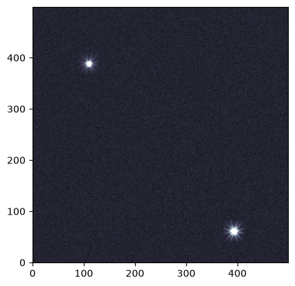
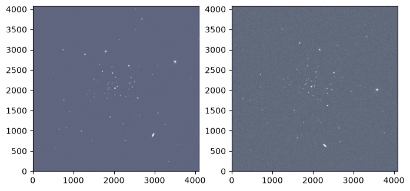
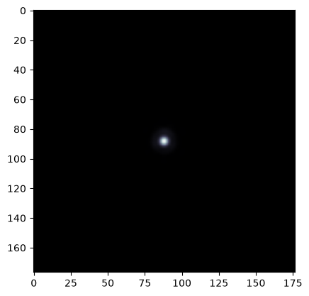
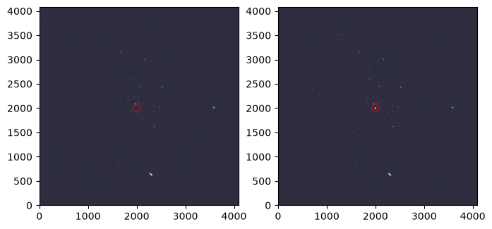

STIPS Tutorial#
Kernel Information and Read-Only Status#
To run this notebook, please select “Roman Research Nexus {VERSION}” kernel at the top right of your window. For example “Roman Research Nexus 2026.1”.
This notebook is read-only. You can run cells and make edits, but you must save changes to a different location. We recommend saving the notebook within your home directory, or to a new folder within your home (e.g. file > save notebook as > my-nbs/nb.ipynb). Note that a directory must exist before you attempt to add a notebook to it.
Introduction#
STIPS, or the Space Telescope Imaging Product Simulator, is a tool developed by STScI for simulating observations of astronomical scenes with the Roman Wide Field Instrument (WFI). Detailed documentation of the tool is available on the RDox pages.
STIPS can generate images of the entire WFI array, which consists of 18 detectors, also called Sensor Chip Assemblies (SCAs). For more information on the WFI detectors and focal plane array please see the RDox documentation. STIPS depends on the Pandeia Exposure time calculator and the STPSF point spread function (PSF) generator to create these simulations. Tutorial notebooks for both Pandeia and STPSF are also available. Users can choose to simulate between 1 and 18 SCAs in any of the WFI imaging filters, insert any number of point or extended sources, and specify a sky background estimate. STIPS will scale input fluxes to observed values, retrieve appropriate PSFs (interpolated to the positions of the sources), and add in additional noise terms.
As described in the Caveats to Using STIPS for Roman, neither pixel saturation nor non-linearity residuals are currently supported.
This notebook is a starter guide to simulating and manipulating scenes with STIPS.
Reference Data#
The cell below will check to ensure ancillary reference files for stips and pandeia packages are installed. If not, it will download the ancillary reference files and install them under your home directory (i.e., ${HOME}/refdata/).
Local Run Settings#
If you want to run the notebook in your local machine, refer to the information in local installation instructions before proceeding with the notebook. The instructions provide important information about setting up your environment, installing dependencies, and adding to your working directory scripts to help with the reference data installation.
Depending on which (if any) reference data are missing, this cell may take several minutes to execute.
On the Roman Research Nexus#
If you are working on the Nexus, then the ancillary reference data are pre-installed and this cell will execute instantly.
import os
import sys
import importlib.util
import notebook_data_dependencies as ndd
# Download reference data (if necessary)
result = ndd.install_files(packages=['stips', 'stpsf', 'pandeia_data', 'pandeia_psf', 'synphot'])
ndd.setup_env(result)
Did not find pandeia_data data in environment, setting it up...
Downloading and uncompressing file...
Found 1 data URL(s) to download and install...
Working on file 1 out of 1
Update environment variable with the following:
export pandeia_refdata='/home/runner/refdata/pandeia_data-2026.1-roman'
Did not find pandeia_psf data in environment, setting it up...
Downloading and uncompressing file...
Found 1 data URL(s) to download and install...
Working on file 1 out of 1
Update environment variable with the following:
export PSF_DIR='/home/runner/refdata/pandeia_psfs-2026.1-roman'
Did not find stpsf data in environment, setting it up...
Downloading and uncompressing file...
Found 1 data URL(s) to download and install...
Working on file 1 out of 1
Update environment variable with the following:
export STPSF_PATH='/home/runner/refdata/stpsf-data'
Did not find stips data in environment, setting it up...
Downloading and uncompressing file...
Found 1 data URL(s) to download and install...
Working on file 1 out of 1
Update environment variable with the following:
export stips_data='/home/runner/refdata/stips_data'
Did not find synphot data in environment, setting it up...
Downloading and uncompressing file...
Found 9 data URL(s) to download and install...
Working on file 1 out of 9
Working on file 2 out of 9
Working on file 3 out of 9
Working on file 4 out of 9
Working on file 5 out of 9
Working on file 6 out of 9
Working on file 7 out of 9
Working on file 8 out of 9
Working on file 9 out of 9
Update environment variable with the following:
export PYSYN_CDBS='/home/runner/refdata/grp/redcat/trds/'
Reference data paths set to:
pandeia_refdata = /home/runner/refdata/pandeia_data-2026.1-roman
PSF_DIR = /home/runner/refdata/pandeia_psfs-2026.1-roman
STPSF_PATH = /home/runner/refdata/stpsf-data
stips_data = /home/runner/refdata/stips_data
PYSYN_CDBS = /home/runner/refdata/grp/redcat/trds/
CRDS_SERVER_URL = https://roman-crds.stsci.edu (pre-set, not overwritten)
CRDS_CONTEXT = roman-edit (pre-set, not overwritten)
CRDS_OBSERVATORY = roman
CRDS_PATH = /home/runner/crds_cache (pre-set, not overwritten)
Imports#
Besides the STIPS-related imports, the matplotlib imports will help visualize simulated images and astropy.io.fits will help write a FITS table on the fly.
import matplotlib as mpl
import matplotlib.pyplot as plt
import stips
import yaml
from astropy.io import fits
from stips.astro_image import AstroImage
from stips.observation_module import ObservationModule
from stips.scene_module import SceneModule
Environment report#
To verify the existing STIPS installation alongside its associated data files and dependencies, run the cell below. (Find the current software requirements in the STIPS documentation.)
print(stips.__env__report__)
STIPS Version 2.3.1 with Data Version 1.0.10 at /home/runner/refdata/stips_data.
STIPS Grid Generated with STIPS Version 1.1.0.
Pandeia Version 2026.2 with Data Version 2026.1 at /home/runner/refdata/pandeia_data-2026.1-roman and PSF Version 2026.1 at /home/runner/refdata/pandeia_psfs-2026.1-roman.
stpsf Version 2.2.0 with Data Version 2.2.0 at /home/runner/refdata/stpsf-data.
Examples#
Basic STIPS Usage#
This tutorial builds on the concepts introduced in the STIPS Overview article and is designed to walk through the phases of using STIPS at the most introductory level: creating a small scene, designing an observation, and generating a simulated image.
At its most fundamental level, STIPS takes a dictionary of observation and instrument parameters and a source catalog in order to return a simulated image. The source catalog can be either a user-defined input catalog in FITS format or it can be simulated using the STIPS SceneModule class (see below).
In this example, we start by specifying an observation dictionary for an image taken with the F129 filter, using the Detector 1 (WFI01), and with an exposure time of 300 seconds.
Note: We first need to update the path to the PSF cache using a YAML configuration file. A patch to fix the setting of this path in STIPS module calls will be released in the near future.
fix = {'psf_cache_location': os.environ["HOME"]}
with open('./stips_config.yaml', 'w') as file:
yaml.dump(fix, file)
Now we set up the observation dictionary:
obs = {'instrument': 'WFI', 'filters': ['F129'], 'detectors': 1,
'background': 'pandeia', 'observations_id': 42, 'exptime': 300,
'offsets': [{'offset_id': 1, 'offset_centre': False, 'offset_ra': 0.0,
'offset_dec': 0.0, 'offset_pa': 0.0}]
}
Then we feed the dictionary to an instance of the ObservationModule class, while also specifying the central coordinates (90 degrees right ascension and 30 degrees declination) and position angle (0 degrees) as keyword arguments.
obm = ObservationModule(obs, ra=90, dec=30, pa=0, seed=42, cores=6)
2026-09-13 04:47:41,552 INFO: Got offsets as [{'offset_id': 1, 'offset_centre': False, 'offset_ra': 0.0, 'offset_dec': 0.0, 'offset_pa': 0.0}]
2026-09-13 04:47:41,582 INFO: Adding observation with filter F129 and offset (0.0,0.0,0.0)
2026-09-13 04:47:41,582 INFO: Added 1 observations
2026-09-13 04:47:41,814 INFO: WFI with 1 detectors. Central offset (np.float64(2.065830864204697e-13), np.float64(-8.945310041616143e-14), 0)
Create a Simple Astronomical Scene#
The other requirement is an input source catalog. In this case, we generate and input a user-defined catalog. STIPS accepts several types of tables and catalogs in either the IPAC text or FITS BinTable format. This example uses a Mixed Catalog, which requires the following columns:
id: Object IDra: Right ascension (RA), in degreesdec: Declination (DEC), in degreesflux: Flux, inunits(defined below)type: Approximation used to profile a source. Options are'sersic'(for extended sources) orpointn: Sersic profile indexphi: Position angle of the Sersic profle’s major axis, in degreesratio: Ratio of the Sersic profile’s major and minor axesSince
n,phi,ratioonly apply to extended sources, they are ignored in rows wheretypeis set to'point'.
notes: Optional per-source commentsunits: One of‘p’for photons/s,‘e’for electrons/s,‘j’for Jansky, or‘c’for counts/s
Below, we create a catalog containing two sources located near the central coordinates specified in the ObservationModule.
cols = [
fits.Column(name='id', array=[1, 2], format='K'),
fits.Column(name='ra', array=[90.02, 90.03], format='D'),
fits.Column(name='dec', array=[29.98, 29.97], format='D'),
fits.Column(name='flux', array=[0.00023, 0.0004], format='D'),
fits.Column(name='type', array=['point', 'point'], format='8A'),
fits.Column(name='n', array=[0, 0], format='D'),
fits.Column(name='re', array=[0, 0], format='D'),
fits.Column(name='phi', array=[0, 0], format='D'),
fits.Column(name='ratio', array=[0, 0], format='D'),
fits.Column(name='notes', array=['', ''], format='8A'),
fits.Column(name='units', array=['j', 'j'], format='8A')
]
Next, we save the columns as a FITS table in the BinTable format and assign header keys that specify the filter and catalog type:
hdut = fits.BinTableHDU.from_columns(cols)
hdut.header['TYPE'] = 'mixed'
hdut.header['FILTER'] = 'F129'
And we save the catalog locally:
cat_file = 'catalog.fits'
hdut.writeto(cat_file, overwrite=True)
Simulate an Image#
With the observation module and source catalog in tow, STIPS can take over the image simulation process. First, we trigger the initialization of a new observation:
obm.nextObservation()
2026-09-13 04:47:41,844 INFO: Initializing Observation 0 of 1
2026-09-13 04:47:41,844 INFO: Observation Filter is F129
2026-09-13 04:47:41,845 INFO: Observation (RA,DEC) = (90.0,30.0) with PA=0.0
2026-09-13 04:47:41,845 INFO: Resetting
2026-09-13 04:47:42,081 INFO: Returning background 0.10970060309254233 for 'pandeia'
2026-09-13 04:47:42,081 INFO: Creating Detector WFI01 with (RA,DEC,PA) = (90.0,30.0,0.0)
2026-09-13 04:47:42,082 INFO: Creating Detector WFI01 with offset (0.0,0.0)
2026-09-13 04:47:42,091 INFO: Creating Instrument with Configuration {'aperture': 'imaging', 'detector': 'wfi01', 'disperser': None, 'filter': 'f129', 'instrument': 'wfi', 'mode': 'imaging'}
2026-09-13 04:47:42,122 INFO: WFI01: (RA, DEC, PA) := (90.0, 30.0, 0.0), detected as (90.0, 30.0, 0.0)
2026-09-13 04:47:42,123 INFO: Detector WFI01 created
2026-09-13 04:47:42,123 INFO: Reset Instrument
Creating pandeia instrument roman.wfi.imaging
0
Next, we simulate an image containing the sources from the catalog we created earlier. Then, we add error residuals to the image:
cat_name = obm.addCatalogue(cat_file)
2026-09-13 04:47:42,130 INFO: Running catalogue catalog.fits
2026-09-13 04:47:42,130 INFO: Adding catalogue catalog.fits
2026-09-13 04:47:42,138 INFO: Converting mixed catalogue
2026-09-13 04:47:42,138 INFO: Preparing output table
2026-09-13 04:47:42,152 INFO: Converting chunk 2
2026-09-13 04:47:42,161 INFO: Finished converting catalogue to internal format
2026-09-13 04:47:42,161 INFO: Adding catalogue to detector WFI01
2026-09-13 04:47:42,162 INFO: Adding catalogue catalog_42_conv_F129.fits to AstroImage WFI01
2026-09-13 04:47:42,175 INFO: Determining pixel co-ordinates
2026-09-13 04:47:42,175 INFO: Keeping 2 items
2026-09-13 04:47:42,176 INFO: Writing 2 stars
2026-09-13 04:47:42,176 INFO: Adding 2 point sources to AstroImage WFI01
2026-09-13 04:47:42,182 INFO: PSF File psf_WFI_2.3.1_F129_wfi01.fits to be put at /home/runner/psf_cache
2026-09-13 04:47:42,183 INFO: PSF File is /home/runner/psf_cache/psf_WFI_2.3.1_F129_wfi01.fits
2026-09-13 04:47:42,402 INFO: WFI01: Starting 3x3 PSF Grid creation at Sun Sep 13 04:47:42 2026
Running instrument: WFI, filter: F129
Running detector: WFI01
Position 1/9: (0, 0) pixels
Attempted to get aberrations at field point (0, 0) which is outside the range of the reference data; approximating to nearest interpolated point (31.993143027288347, 0.015652222616090228)
Attempted to get aberrations at field point (0, 0) which is outside the range of the reference data; approximating to nearest interpolated point (31.993143027288347, 0.015652222616090228)
Attempted to get aberrations at field point (0, 0) which is outside the range of the reference data; approximating to nearest interpolated point (31.993143027288347, 0.015652222616090228)
Attempted to get aberrations at field point (0, 0) which is outside the range of the reference data; approximating to nearest interpolated point (31.993143027288347, 0.015652222616090228)
Attempted to get aberrations at field point (0, 0) which is outside the range of the reference data; approximating to nearest interpolated point (31.993143027288347, 0.015652222616090228)
Attempted to get aberrations at field point (0, 0) which is outside the range of the reference data; approximating to nearest interpolated point (31.993143027288347, 0.015652222616090228)
Attempted to get aberrations at field point (0, 0) which is outside the range of the reference data; approximating to nearest interpolated point (31.993143027288347, 0.015652222616090228)
Attempted to get aberrations at field point (0, 0) which is outside the range of the reference data; approximating to nearest interpolated point (31.993143027288347, 0.015652222616090228)
Attempted to get aberrations at field point (0, 0) which is outside the range of the reference data; approximating to nearest interpolated point (31.993143027288347, 0.015652222616090228)
Attempted to get aberrations at field point (0, 0) which is outside the range of the reference data; approximating to nearest interpolated point (31.993143027288347, 0.015652222616090228)
Position 1/9 centroid: (np.float64(87.68525601880117), np.float64(88.03490794605862))
Position 2/9: (0, 2048) pixels
Attempted to get aberrations at field point (0, 2048) which is outside the range of the reference data; approximating to nearest interpolated point (30.9911863199469, 2048.0151620285324)
Attempted to get aberrations at field point (0, 2048) which is outside the range of the reference data; approximating to nearest interpolated point (30.9911863199469, 2048.0151620285324)
Attempted to get aberrations at field point (0, 2048) which is outside the range of the reference data; approximating to nearest interpolated point (30.9911863199469, 2048.0151620285324)
Attempted to get aberrations at field point (0, 2048) which is outside the range of the reference data; approximating to nearest interpolated point (30.9911863199469, 2048.0151620285324)
Attempted to get aberrations at field point (0, 2048) which is outside the range of the reference data; approximating to nearest interpolated point (30.9911863199469, 2048.0151620285324)
Attempted to get aberrations at field point (0, 2048) which is outside the range of the reference data; approximating to nearest interpolated point (30.9911863199469, 2048.0151620285324)
Attempted to get aberrations at field point (0, 2048) which is outside the range of the reference data; approximating to nearest interpolated point (30.9911863199469, 2048.0151620285324)
Attempted to get aberrations at field point (0, 2048) which is outside the range of the reference data; approximating to nearest interpolated point (30.9911863199469, 2048.0151620285324)
Attempted to get aberrations at field point (0, 2048) which is outside the range of the reference data; approximating to nearest interpolated point (30.9911863199469, 2048.0151620285324)
Attempted to get aberrations at field point (0, 2048) which is outside the range of the reference data; approximating to nearest interpolated point (30.9911863199469, 2048.0151620285324)
Position 2/9 centroid: (np.float64(87.63314008076959), np.float64(88.02741765366459))
Position 3/9: (0, 4095) pixels
Attempted to get aberrations at field point (0, 4095) which is outside the range of the reference data; approximating to nearest input grid point
Attempted to get aberrations at field point (0, 4095) which is outside the range of the reference data; approximating to nearest input grid point
Attempted to get aberrations at field point (0, 4095) which is outside the range of the reference data; approximating to nearest input grid point
Attempted to get aberrations at field point (0, 4095) which is outside the range of the reference data; approximating to nearest input grid point
Attempted to get aberrations at field point (0, 4095) which is outside the range of the reference data; approximating to nearest input grid point
Attempted to get aberrations at field point (0, 4095) which is outside the range of the reference data; approximating to nearest input grid point
Attempted to get aberrations at field point (0, 4095) which is outside the range of the reference data; approximating to nearest input grid point
Attempted to get aberrations at field point (0, 4095) which is outside the range of the reference data; approximating to nearest input grid point
Attempted to get aberrations at field point (0, 4095) which is outside the range of the reference data; approximating to nearest input grid point
Attempted to get aberrations at field point (0, 4095) which is outside the range of the reference data; approximating to nearest input grid point
Position 3/9 centroid: (np.float64(87.58289549392462), np.float64(88.0190588531863))
Position 4/9: (2048, 0) pixels
Position 4/9 centroid: (np.float64(87.69103863151321), np.float64(88.1226605409792))
Position 5/9: (2048, 2048) pixels
Position 5/9 centroid: (np.float64(87.635366416873), np.float64(88.13077792479699))
Position 6/9: (2048, 4095) pixels
Attempted to get aberrations at field point (2048, 4095) which is outside the range of the reference data; approximating to nearest interpolated point (2048.0050174304056, 4074.4937619323296)
Attempted to get aberrations at field point (2048, 4095) which is outside the range of the reference data; approximating to nearest interpolated point (2048.0050174304056, 4074.4937619323296)
Attempted to get aberrations at field point (2048, 4095) which is outside the range of the reference data; approximating to nearest interpolated point (2048.0050174304056, 4074.4937619323296)
Attempted to get aberrations at field point (2048, 4095) which is outside the range of the reference data; approximating to nearest interpolated point (2048.0050174304056, 4074.4937619323296)
Attempted to get aberrations at field point (2048, 4095) which is outside the range of the reference data; approximating to nearest interpolated point (2048.0050174304056, 4074.4937619323296)
Attempted to get aberrations at field point (2048, 4095) which is outside the range of the reference data; approximating to nearest interpolated point (2048.0050174304056, 4074.4937619323296)
Attempted to get aberrations at field point (2048, 4095) which is outside the range of the reference data; approximating to nearest interpolated point (2048.0050174304056, 4074.4937619323296)
Attempted to get aberrations at field point (2048, 4095) which is outside the range of the reference data; approximating to nearest interpolated point (2048.0050174304056, 4074.4937619323296)
Attempted to get aberrations at field point (2048, 4095) which is outside the range of the reference data; approximating to nearest interpolated point (2048.0050174304056, 4074.4937619323296)
Attempted to get aberrations at field point (2048, 4095) which is outside the range of the reference data; approximating to nearest interpolated point (2048.0050174304056, 4074.4937619323296)
Position 6/9 centroid: (np.float64(87.60845479172363), np.float64(88.1643345521212))
Position 7/9: (4095, 0) pixels
Position 7/9 centroid: (np.float64(87.6972108079798), np.float64(88.21135855781675))
Position 8/9: (4095, 2048) pixels
Position 8/9 centroid: (np.float64(87.66543383685017), np.float64(88.2623325340167))
Position 9/9: (4095, 4095) pixels
Attempted to get aberrations at field point (4095, 4095) which is outside the range of the reference data; approximating to nearest interpolated point (4095.004894881753, 4074.994618276213)
Attempted to get aberrations at field point (4095, 4095) which is outside the range of the reference data; approximating to nearest interpolated point (4095.004894881753, 4074.994618276213)
Attempted to get aberrations at field point (4095, 4095) which is outside the range of the reference data; approximating to nearest interpolated point (4095.004894881753, 4074.994618276213)
Attempted to get aberrations at field point (4095, 4095) which is outside the range of the reference data; approximating to nearest interpolated point (4095.004894881753, 4074.994618276213)
Attempted to get aberrations at field point (4095, 4095) which is outside the range of the reference data; approximating to nearest interpolated point (4095.004894881753, 4074.994618276213)
Attempted to get aberrations at field point (4095, 4095) which is outside the range of the reference data; approximating to nearest interpolated point (4095.004894881753, 4074.994618276213)
Attempted to get aberrations at field point (4095, 4095) which is outside the range of the reference data; approximating to nearest interpolated point (4095.004894881753, 4074.994618276213)
Attempted to get aberrations at field point (4095, 4095) which is outside the range of the reference data; approximating to nearest interpolated point (4095.004894881753, 4074.994618276213)
Attempted to get aberrations at field point (4095, 4095) which is outside the range of the reference data; approximating to nearest interpolated point (4095.004894881753, 4074.994618276213)
Attempted to get aberrations at field point (4095, 4095) which is outside the range of the reference data; approximating to nearest interpolated point (4095.004894881753, 4074.994618276213)
2026-09-13 04:48:26,905 INFO: WFI01: Finished PSF Grid creation at Sun Sep 13 04:48:26 2026
Position 9/9 centroid: (np.float64(87.63467976133113), np.float64(88.31165394312333))
Saving file: /home/runner/psf_cache/psf_WFI_2.3.1_F129_wfi01.fits
2026-09-13 04:48:27,721 INFO: Adding point source 1 to AstroImage 2631.9672457028046,1410.503966182148
2026-09-13 04:48:27,733 INFO: Adding point source 2 to AstroImage 2915.5365753799083,1083.2929624680437
2026-09-13 04:48:27,755 INFO: Added catalogue catalog_42_conv_F129.fits to AstroImage WFI01
2026-09-13 04:48:27,755 INFO: Finished catalogue catalog.fits
obm.addError()
2026-09-13 04:48:27,760 INFO: Adding Error
2026-09-13 04:48:27,761 INFO: Adding residual error
2026-09-13 04:48:27,789 INFO: WFI01: (RA, DEC, PA) := (0.0, 0.0, 0.0), detected as (0.0, 0.0, 0.0)
2026-09-13 04:48:28,029 INFO: WFI01: (RA, DEC, PA) := (0.0, 0.0, 0.0), detected as (0.0, 0.0, 0.0)
2026-09-13 04:48:28,029 INFO: Created AstroImage WFI01 and imported data from FITS file err_flat_wfi.fits
2026-09-13 04:48:28,059 INFO: WFI01: (RA, DEC, PA) := (0.0, 0.0, 0.0), detected as (0.0, 0.0, 0.0)
2026-09-13 04:48:28,301 INFO: WFI01: (RA, DEC, PA) := (0.0, 0.0, 0.0), detected as (0.0, 0.0, 0.0)
2026-09-13 04:48:28,302 INFO: Created AstroImage WFI01 and imported data from FITS file err_rdrk_wfi.fits
2026-09-13 04:48:28,306 INFO: Adding error to detector WFI01
2026-09-13 04:48:28,306 INFO: Adding background
2026-09-13 04:48:28,490 INFO: Returning background 0.10970060309254233 for 'pandeia'
2026-09-13 04:48:28,491 INFO: Background is 0.10970060309254233 counts/s/pixel
2026-09-13 04:48:28,672 INFO: Returning background 0.10970060309254233 for 'pandeia'
2026-09-13 04:48:28,672 INFO: Added background of 0.10970060309254233 counts/s/pixel
2026-09-13 04:48:28,686 INFO: Inserting correct exposure time
2026-09-13 04:48:28,690 INFO: Cropping Down to base Detector Size
2026-09-13 04:48:28,691 INFO: Cropping convolved image down to detector size
2026-09-13 04:48:28,691 INFO: Taking [22:4110, 22:4110]
2026-09-13 04:48:28,700 INFO: WFI01: (RA, DEC, PA) := (90.0, 30.0, 0.0), detected as (90.0, 30.0, 0.0)
2026-09-13 04:48:28,701 INFO: Adding poisson noise
2026-09-13 04:48:29,151 INFO: Adding Poisson Noise with mean 0.000414350956733871 and standard deviation 5.745749398977401
2026-09-13 04:48:29,153 INFO: Adding readnoise
2026-09-13 04:48:29,548 INFO: Adding readnoise with mean 0.0006565025541931391 and STDEV 12.00109577178955
2026-09-13 04:48:29,549 INFO: Adding flatfield residual
2026-09-13 04:48:29,584 INFO: Adding Flatfield residual with mean 1.0097910165786743 and standard deviation 0.0006765797734260559
2026-09-13 04:48:29,585 INFO: Adding dark residual
2026-09-13 04:48:29,621 INFO: Adding Dark residual with mean 0.20807769894599915 and standard deviation 1.1006208658218384
2026-09-13 04:48:29,621 INFO: Adding cosmic ray residual
2026-09-13 04:48:30,423 INFO: Adding Cosmic Ray residual with mean 0.0847659632563591 and standard deviation 1.9229004383087158
2026-09-13 04:48:30,427 INFO: Finished adding error
2026-09-13 04:48:30,428 INFO: Finished Adding Error
We finish by saving the outputs to a FITS file. The finalize() method of the ObservationModule object can also return a full field of view mosaic and a list of the simulation’s initial parameters.
fits_file_1, _, params_1 = obm.finalize(mosaic=False)
print(f"Output FITS file is {fits_file_1}")
2026-09-13 04:48:30,433 INFO: Converting to FITS file
2026-09-13 04:48:30,434 INFO: Converting detector WFI01 to FITS extension
2026-09-13 04:48:30,435 INFO: Creating Extension HDU from AstroImage WFI01
2026-09-13 04:48:30,437 INFO: Created Extension HDU from AstroImage WFI01
2026-09-13 04:48:30,462 INFO: Created FITS file /home/runner/work/roman_notebooks/roman_notebooks/notebooks/stips/sim_42_0.fits
Output FITS file is /home/runner/work/roman_notebooks/roman_notebooks/notebooks/stips/sim_42_0.fits
for prm in params_1:
print(prm)
Instrument: WFI
Filters: F129
Pixel Scale: (0.110,0.110) arcsec/pix
Pivot Wavelength: 1.290 um
Background Type: Pandeia background rate
Exposure Time: 300.0s
Input Unit: counts/s
Added Flatfield Residual: True
Added Dark Current Residual: True
Added Cosmic Ray Residual: True
Added Readnoise: True
Added Poisson Noise: True
Detector X size: 4088
Detector Y size: 4088
Random Seed: 42
img_1 = fits.getdata(fits_file_1)[1000:1500, 2500:3000]
plt.imshow(img_1, vmax=1.5, origin='lower', cmap='bone')
<matplotlib.image.AxesImage at 0x7f0d3423aa50>

Generate Scenes Using STIPS Built-In Functions#
STIPS can simulate scenes by importing pre-existing catalogs (as in the first example) or by using built-in functionality that generates collections of stars or galaxies based on user-specified parameters. Below, we will use the STIPS SceneModule to generate a stellar population and a galactic population.
First, we specify a set of parameters that will be used in both scenes (RA, DEC, ID) and initialize two SceneModule instances, one for the stellar population and one for the galaxy population:
obs_prefix_1 = 'notebook_example1'
obs_ra = 150.0
obs_dec = -2.5
scm_stellar = SceneModule(out_prefix=obs_prefix_1, ra=obs_ra, dec=obs_dec)
scm_galactic = SceneModule(out_prefix=obs_prefix_1, ra=obs_ra, dec=obs_dec)
Log level: INFO
Log level: INFO
Create a Stellar Population#
Now we create a dictionary containing the parameters of the desired stellar population to pass to the SceneModule instance’s CreatePopulation() method. The following parameters are needed to define a stellar population:
Number of point sources
Upper and lower limit of the age of the stars (in years)
Upper and lower limit of the metallicity of the stars
Initial Mass Function
Binary fraction
Clustering (True/False)
Distribution type (Uniform, Inverse power-law)
Total radius of the population
Distance from the population
Offset RA and DEC from the center of the scene being created
A full accounting of each dictionary entry’s meaning can be found in the docstring of the CreatePopulation() method:
scm_stellar.CreatePopulation?
stellar_parameters = {'n_stars': 100, 'age_low': 7.5e12, 'age_high': 7.5e12,
'z_low': -2.0, 'z_high': -2.0, 'imf': 'salpeter',
'alpha': -2.35, 'binary_fraction': 0.1,
'distribution': 'invpow', 'clustered': True,
'radius': 100.0, 'radius_units': 'pc',
'distance_low': 20.0, 'distance_high': 20.0,
'offset_ra': 0.0, 'offset_dec': 0.0
}
We pass the dictionary to the stellar SceneModule instance’s CreatePopulation() method. Running the method will save the newly-generated population locally.
stellar_cat_file = scm_stellar.CreatePopulation(stellar_parameters)
print(f"Stellar population saved to file {stellar_cat_file}")
2026-09-13 04:48:30,719 INFO: Creating catalogue /home/runner/work/roman_notebooks/roman_notebooks/notebooks/stips/notebook_example1_stars_000.fits
2026-09-13 04:48:30,720 INFO: Creating age and metallicity numbers
2026-09-13 04:48:30,720 INFO: Created age and metallicity numbers
2026-09-13 04:48:30,721 INFO: Creating stars
2026-09-13 04:48:30,721 INFO: Age 1.35e+10
2026-09-13 04:48:30,722 INFO: Metallicity -2.000000
2026-09-13 04:48:30,722 INFO: Creating 100 stars
2026-09-13 04:48:31,049 INFO: Creating 100 objects, max radius 100.0, function invpow, scale 2.8
2026-09-13 04:48:31,103 INFO: Chunk 1: 110 stars
2026-09-13 04:48:31,116 INFO: Done creating catalogue
Stellar population saved to file /home/runner/work/roman_notebooks/roman_notebooks/notebooks/stips/notebook_example1_stars_000.fits
Create a Galactic Population#
Repeat the population generation process, now by creating a dictionary containing parameters of a desired galactic population. The following paramters are needed to define a galaxy population:
Number of galaxies
Upper and lower limit of the redshift
Upper and lower limit of the galactic radii
Range of V-band surface brightness magnitudes
Clustering (True/False)
Distribution type (Uniform, Inverse power-law)
Radius of the distribution
Offset RA and DEC from the center of the scene being created
A full accounting of each dictionary entry’s meaning can be found in the docstring of the CreateGalaxies() method:
scm_galactic.CreateGalaxies?
We pass the dictionary to the galaxy SceneModule instance’s CreateGalaxies() method, and save the result locally:
galaxy_parameters = {'n_gals': 10, 'z_low': 0.0, 'z_high': 0.2,
'rad_low': 0.01, 'rad_high': 2.0,
'sb_v_low': 30.0, 'sb_v_high': 25.0,
'distribution': 'uniform', 'clustered': False,
'radius': 200.0, 'radius_units': 'arcsec',
'offset_ra': 0.0, 'offset_dec': 0.0
}
galaxy_cat_file = scm_galactic.CreateGalaxies(galaxy_parameters)
print(f"Galaxy population saved to file {galaxy_cat_file}")
2026-09-13 04:48:31,129 INFO: Creating catalogue /home/runner/work/roman_notebooks/roman_notebooks/notebooks/stips/notebook_example1_gals_000.fits
2026-09-13 04:48:31,130 INFO: Wrote preamble
2026-09-13 04:48:31,130 INFO: Parameters are: {'n_gals': 10, 'z_low': 0.0, 'z_high': 0.2, 'rad_low': 0.01, 'rad_high': 2.0, 'sb_v_low': 30.0, 'sb_v_high': 25.0, 'distribution': 'uniform', 'clustered': False, 'radius': 200.0, 'radius_units': 'arcsec', 'offset_ra': 0.0, 'offset_dec': 0.0}
2026-09-13 04:48:31,132 INFO: Making Co-ordinates
2026-09-13 04:48:31,132 INFO: Creating 10 objects, max radius 200.0, function uniform, scale 2.8
2026-09-13 04:48:31,132 INFO: Converting Co-ordinates into RA,DEC
2026-09-13 04:48:31,143 INFO: Done creating catalogue
Galaxy population saved to file /home/runner/work/roman_notebooks/roman_notebooks/notebooks/stips/notebook_example1_gals_000.fits
Set up an Observation (First Pointing)#
Once we’ve created a scene, we can use STIPS to simulate as many exposures of it in as many orientations as we’d like. In STIPS, a single telescope pointing is called an offset, and a collection of exposures is an observation.
We start this subsection by creating a single offset that is dithered by 2 degrees in right ascension and rotated by 0.5 degrees in position angle from the center of the scene.
offset_1 = {'offset_id': 1, 'offset_centre': False,
# True would center each detector on the same on-sky point
'offset_ra': 2.0, 'offset_dec': 0.0, 'offset_pa': 0.5
}
The offset information is contained within an observation that is taken with the F129 filter, uses detectors WFI01 through WFI03, and has an exposure time of 1500 seconds. We also apply distortion and specify a sky background of 0.24 counts/s/pixel.
observation_parameters_1 = {'instrument': 'WFI', 'filters': ['F129'],
'detectors': 3, 'distortion': True,
'background': 0.24, 'observations_id': 1,
'exptime': 1500, 'offsets': [offset_1]
}
STIPS can also apply various types of error residuals to the observation. Here, we only include residuals from flat-fields and the dark current.
residuals_1 = {'residual_flat': True, 'residual_dark': True,
'residual_cosmic': False, 'residual_poisson': False,
'residual_readnoise': False
}
Next, we feed the observation dictionary to an instance of the ObservationModule class, alongside the observation ID, right ascension, and declination specified earlier in this example.
obm_1 = ObservationModule(observation_parameters_1, residual=residuals_1,
out_prefix=obs_prefix_1, ra=obs_ra, dec=obs_dec)
2026-09-13 04:48:31,163 INFO: Got offsets as [{'offset_id': 1, 'offset_centre': False, 'offset_ra': 2.0, 'offset_dec': 0.0, 'offset_pa': 0.5}]
2026-09-13 04:48:31,181 INFO: Adding observation with filter F129 and offset (2.0,0.0,0.5)
2026-09-13 04:48:31,182 INFO: Added 1 observations
2026-09-13 04:48:31,359 INFO: WFI with 3 detectors. Central offset (np.float64(1.7907664211548176e-13), np.float64(-8.945310041616143e-14), 0)
We call the ObservationModule object’s nextObservation() method to move to the first offset/filter combination (offset_1 and F129) contained in the object.
obm_1.nextObservation()
2026-09-13 04:48:31,364 INFO: Initializing Observation 0 of 1
2026-09-13 04:48:31,364 INFO: Observation Filter is F129
2026-09-13 04:48:31,365 INFO: Observation (RA,DEC) = (150.00055555555556,-2.5) with PA=0.5
2026-09-13 04:48:31,366 INFO: Resetting
2026-09-13 04:48:31,366 INFO: Returning background 0.24.
2026-09-13 04:48:31,367 INFO: Creating Detector WFI01 with (RA,DEC,PA) = (150.00055555555556,-2.5,0.5)
2026-09-13 04:48:31,367 INFO: Creating Detector WFI01 with offset (0.0,0.0)
2026-09-13 04:48:31,377 INFO: Creating Instrument with Configuration {'aperture': 'imaging', 'detector': 'wfi01', 'disperser': None, 'filter': 'f129', 'instrument': 'wfi', 'mode': 'imaging'}
2026-09-13 04:48:31,408 INFO: WFI01: (RA, DEC, PA) := (150.00055555555556, -2.5, 0.5), detected as (150.00055555555556, -2.5, 0.5000000000001229)
2026-09-13 04:48:31,409 INFO: Detector WFI01 created
2026-09-13 04:48:31,409 INFO: Creating Detector WFI02 with (RA,DEC,PA) = (150.00063361633363,-2.6463679052675504,0.5)
2026-09-13 04:48:31,409 INFO: Creating Detector WFI02 with offset (7.806077806812047e-05,-0.1463679052675503)
2026-09-13 04:48:31,419 INFO: WFI02: (RA, DEC, PA) := (150.00063361633363, -2.6463679052675504, 0.5), detected as (150.00063361633363, -2.6463679052675504, 0.5000000000001229)
2026-09-13 04:48:31,419 INFO: Detector WFI02 created
2026-09-13 04:48:31,420 INFO: Creating Detector WFI03 with (RA,DEC,PA) = (150.00076976694686,-2.777285221181246,0.5)
2026-09-13 04:48:31,420 INFO: Creating Detector WFI03 with offset (0.00021421139128143576,-0.2772852211812461)
2026-09-13 04:48:31,430 INFO: WFI03: (RA, DEC, PA) := (150.00076976694686, -2.777285221181246, 0.5), detected as (150.00076976694686, -2.777285221181246, 0.5000000000001229)
2026-09-13 04:48:31,430 INFO: Detector WFI03 created
2026-09-13 04:48:31,430 INFO: Reset Instrument
Creating pandeia instrument roman.wfi.imaging
0
Now that the observation is fully set up, we add the stellar and galactic populations to it. (Please note that each population may take about a minute to load.)
output_stellar_catalogs_1 = obm_1.addCatalogue(stellar_cat_file)
output_galaxy_catalogs_1 = obm_1.addCatalogue(galaxy_cat_file)
print(f"Output Catalogs are {output_stellar_catalogs_1} and "
f"{output_galaxy_catalogs_1}.")
2026-09-13 04:48:31,436 INFO: Running catalogue /home/runner/work/roman_notebooks/roman_notebooks/notebooks/stips/notebook_example1_stars_000.fits
2026-09-13 04:48:31,437 INFO: Adding catalogue /home/runner/work/roman_notebooks/roman_notebooks/notebooks/stips/notebook_example1_stars_000.fits
2026-09-13 04:48:31,447 INFO: Converting phoenix catalogue
2026-09-13 04:48:31,448 INFO: Preparing output table
2026-09-13 04:48:31,466 INFO: Converting chunk 2
2026-09-13 04:48:31,467 INFO: Converting Phoenix Table to Internal format
2026-09-13 04:48:31,467 INFO: 1 datasets
2026-09-13 04:48:31,796 INFO: Finished converting catalogue to internal format
2026-09-13 04:48:31,797 INFO: Adding catalogue to detector WFI01
2026-09-13 04:48:31,798 INFO: Adding catalogue notebook_example1_stars_000_01_conv_F129.fits to AstroImage WFI01
2026-09-13 04:48:31,810 INFO: Determining pixel co-ordinates
2026-09-13 04:48:31,810 INFO: Keeping 66 items
2026-09-13 04:48:31,811 INFO: Writing 66 stars
2026-09-13 04:48:31,812 INFO: Adding 66 point sources to AstroImage WFI01
2026-09-13 04:48:31,817 INFO: PSF File psf_WFI_2.3.1_F129_wfi01.fits to be put at /home/runner/psf_cache
2026-09-13 04:48:31,818 INFO: PSF File is /home/runner/psf_cache/psf_WFI_2.3.1_F129_wfi01.fits
2026-09-13 04:48:32,615 INFO: Adding point source 1 to AstroImage 2042.1341904485187,2071.2086865314777
2026-09-13 04:48:32,627 INFO: Adding point source 2 to AstroImage 2048.64208548411,1909.4025757319198
2026-09-13 04:48:32,638 INFO: Adding point source 3 to AstroImage 1897.0893195717445,2211.8829400388677
2026-09-13 04:48:32,650 INFO: Adding point source 4 to AstroImage 2060.348464129021,2337.635725039696
2026-09-13 04:48:32,661 INFO: Adding point source 5 to AstroImage 1866.206564971339,2157.6465495273196
2026-09-13 04:48:32,672 INFO: Adding point source 6 to AstroImage 2075.621959827243,2220.6358207665926
2026-09-13 04:48:32,684 INFO: Adding point source 7 to AstroImage 2045.4790774326161,2073.4602495594945
2026-09-13 04:48:32,695 INFO: Adding point source 8 to AstroImage 2050.7423355147876,2076.962161040638
2026-09-13 04:48:32,706 INFO: Adding point source 9 to AstroImage 2046.836178495134,2065.1585094272887
2026-09-13 04:48:32,717 INFO: Adding point source 10 to AstroImage 1884.383787341356,2048.1968287940504
2026-09-13 04:48:32,729 INFO: Adding point source 11 to AstroImage 2052.009345985564,2083.25776925586
2026-09-13 04:48:32,740 INFO: Adding point source 12 to AstroImage 1878.0039088618553,1938.0798819164465
2026-09-13 04:48:32,751 INFO: Adding point source 13 to AstroImage 2529.4311880785212,2230.3386181592723
2026-09-13 04:48:32,762 INFO: Adding point source 14 to AstroImage 1535.3651370736682,1872.8926962162561
2026-09-13 04:48:32,773 INFO: Adding point source 15 to AstroImage 1727.402416341553,2395.6953273532476
2026-09-13 04:48:32,785 INFO: Adding point source 16 to AstroImage 1423.2474873054498,2006.4906211552948
2026-09-13 04:48:32,796 INFO: Adding point source 17 to AstroImage 2391.2611055011025,2044.8516840279353
2026-09-13 04:48:32,807 INFO: Adding point source 18 to AstroImage 1455.2252196955974,1753.8160668071414
2026-09-13 04:48:32,818 INFO: Adding point source 19 to AstroImage 1979.1120704920058,2191.776673193404
2026-09-13 04:48:32,829 INFO: Adding point source 20 to AstroImage 2447.640589324627,2336.121424710745
2026-09-13 04:48:32,841 INFO: Adding point source 21 to AstroImage 1853.9571046370763,1816.6437975185834
2026-09-13 04:48:32,852 INFO: Adding point source 22 to AstroImage 1530.4577658741257,2293.8874065435325
2026-09-13 04:48:32,863 INFO: Adding point source 23 to AstroImage 2387.429925238458,1880.2156391705523
2026-09-13 04:48:32,874 INFO: Adding point source 24 to AstroImage 2474.73024370076,2100.2733109480487
2026-09-13 04:48:32,886 INFO: Adding point source 25 to AstroImage 1737.512014610425,2487.7044467512424
2026-09-13 04:48:32,897 INFO: Adding point source 26 to AstroImage 2182.6035615310934,1887.8080667096883
2026-09-13 04:48:32,909 INFO: Adding point source 27 to AstroImage 2638.1330331853287,2614.392020167011
2026-09-13 04:48:32,920 INFO: Adding point source 28 to AstroImage 1662.1750520235282,2651.0023618655237
2026-09-13 04:48:32,931 INFO: Adding point source 29 to AstroImage 1629.0083067914709,2258.7070012801505
2026-09-13 04:48:32,942 INFO: Adding point source 30 to AstroImage 934.9412611344774,1489.3130116748018
2026-09-13 04:48:32,954 INFO: Adding point source 31 to AstroImage 3286.203773392832,1172.5142425939625
2026-09-13 04:48:32,965 INFO: Adding point source 32 to AstroImage 2412.4707431401885,2199.7873385449707
2026-09-13 04:48:32,977 INFO: Adding point source 33 to AstroImage 1973.040903901759,2595.559317596424
2026-09-13 04:48:32,988 INFO: Adding point source 34 to AstroImage 2438.4485804888072,2548.377163016912
2026-09-13 04:48:32,999 INFO: Adding point source 35 to AstroImage 845.9270092534268,1093.0165377435826
2026-09-13 04:48:33,011 INFO: Adding point source 36 to AstroImage 1218.420036373758,1014.9186475029733
2026-09-13 04:48:33,022 INFO: Adding point source 37 to AstroImage 3108.2183665894318,2633.5149811594874
2026-09-13 04:48:33,033 INFO: Adding point source 38 to AstroImage 765.5086709597358,3018.5944370545353
2026-09-13 04:48:33,044 INFO: Adding point source 39 to AstroImage 570.4188903665547,599.9395426031447
2026-09-13 04:48:33,056 INFO: Adding point source 40 to AstroImage 2105.9615437984876,2115.520317901651
2026-09-13 04:48:33,068 INFO: Adding point source 41 to AstroImage 1536.093194190105,1950.2856276369453
2026-09-13 04:48:33,079 INFO: Adding point source 42 to AstroImage 2562.889338405879,3515.447643396984
2026-09-13 04:48:33,090 INFO: Adding point source 43 to AstroImage 2566.399172166965,1408.9376452955603
2026-09-13 04:48:33,102 INFO: Adding point source 44 to AstroImage 2965.8968059099266,9.774174226900413
2026-09-13 04:48:33,110 INFO: Adding point source 45 to AstroImage 1927.9513860642846,1361.0755458273761
2026-09-13 04:48:33,122 INFO: Adding point source 46 to AstroImage 4112.114658110913,3293.525927509249
2026-09-13 04:48:33,132 INFO: Adding point source 47 to AstroImage 1406.0776126418673,8.83515492612105
2026-09-13 04:48:33,141 INFO: Adding point source 48 to AstroImage 3373.1927702526455,262.07234049978706
2026-09-13 04:48:33,152 INFO: Adding point source 49 to AstroImage 2559.519956606703,4028.264456431698
2026-09-13 04:48:33,163 INFO: Adding point source 50 to AstroImage 2317.7834893085446,1862.4364193654596
2026-09-13 04:48:33,174 INFO: Adding point source 51 to AstroImage 1786.6107504025717,1933.5946559713389
2026-09-13 04:48:33,185 INFO: Adding point source 52 to AstroImage 1901.518403620181,2088.0842497859276
2026-09-13 04:48:33,197 INFO: Adding point source 53 to AstroImage 2611.9105508819475,1830.501800862152
2026-09-13 04:48:33,208 INFO: Adding point source 54 to AstroImage 1356.1648061377164,1922.144231263812
2026-09-13 04:48:33,219 INFO: Adding point source 55 to AstroImage 2050.0766623422764,2100.006468435604
2026-09-13 04:48:33,230 INFO: Adding point source 56 to AstroImage 1987.7609775808985,2445.414812202094
2026-09-13 04:48:33,241 INFO: Adding point source 57 to AstroImage 3901.0862851208685,2305.1266672867823
2026-09-13 04:48:33,252 INFO: Adding point source 58 to AstroImage 1473.8454833898918,781.306314933855
2026-09-13 04:48:33,264 INFO: Adding point source 59 to AstroImage 2365.7338456800608,895.845063593003
2026-09-13 04:48:33,275 INFO: Adding point source 60 to AstroImage 540.012454864999,2439.8942013423098
2026-09-13 04:48:33,286 INFO: Adding point source 61 to AstroImage 788.3427772663165,1776.8058170740821
2026-09-13 04:48:33,297 INFO: Adding point source 62 to AstroImage 2300.777765048442,782.6106803645021
2026-09-13 04:48:33,308 INFO: Adding point source 63 to AstroImage 2652.1002944253596,1387.5959314593542
2026-09-13 04:48:33,319 INFO: Adding point source 64 to AstroImage 3108.8778991996915,1459.019211683425
2026-09-13 04:48:33,330 INFO: Adding point source 65 to AstroImage 668.6954163824942,1053.9815369234339
2026-09-13 04:48:33,342 INFO: Adding point source 66 to AstroImage 2164.668528629324,3266.0548387425397
2026-09-13 04:48:33,363 INFO: Added catalogue notebook_example1_stars_000_01_conv_F129.fits to AstroImage WFI01
2026-09-13 04:48:33,364 INFO: Adding catalogue to detector WFI02
2026-09-13 04:48:33,364 INFO: Adding catalogue notebook_example1_stars_000_01_conv_F129.fits to AstroImage WFI02
2026-09-13 04:48:33,377 INFO: Determining pixel co-ordinates
2026-09-13 04:48:33,377 INFO: Keeping 3 items
2026-09-13 04:48:33,378 INFO: Writing 3 stars
2026-09-13 04:48:33,379 INFO: Adding 3 point sources to AstroImage WFI02
2026-09-13 04:48:33,385 INFO: PSF File psf_WFI_2.3.1_F129_wfi02.fits to be put at /home/runner/psf_cache
2026-09-13 04:48:33,385 INFO: PSF File is /home/runner/psf_cache/psf_WFI_2.3.1_F129_wfi02.fits
2026-09-13 04:48:33,578 INFO: WFI02: Starting 3x3 PSF Grid creation at Sun Sep 13 04:48:33 2026
Running instrument: WFI, filter: F129
Running detector: WFI02
Position 1/9: (0, 0) pixels
Attempted to get aberrations at field point (0, 0) which is outside the range of the reference data; approximating to nearest interpolated point (32.99657336801154, 0.008071568827791253)
Attempted to get aberrations at field point (0, 0) which is outside the range of the reference data; approximating to nearest interpolated point (32.99657336801154, 0.008071568827791253)
Attempted to get aberrations at field point (0, 0) which is outside the range of the reference data; approximating to nearest interpolated point (32.99657336801154, 0.008071568827791253)
Attempted to get aberrations at field point (0, 0) which is outside the range of the reference data; approximating to nearest interpolated point (32.99657336801154, 0.008071568827791253)
Attempted to get aberrations at field point (0, 0) which is outside the range of the reference data; approximating to nearest interpolated point (32.99657336801154, 0.008071568827791253)
Attempted to get aberrations at field point (0, 0) which is outside the range of the reference data; approximating to nearest interpolated point (32.99657336801154, 0.008071568827791253)
Attempted to get aberrations at field point (0, 0) which is outside the range of the reference data; approximating to nearest interpolated point (32.99657336801154, 0.008071568827791253)
Attempted to get aberrations at field point (0, 0) which is outside the range of the reference data; approximating to nearest interpolated point (32.99657336801154, 0.008071568827791253)
Attempted to get aberrations at field point (0, 0) which is outside the range of the reference data; approximating to nearest interpolated point (32.99657336801154, 0.008071568827791253)
Attempted to get aberrations at field point (0, 0) which is outside the range of the reference data; approximating to nearest interpolated point (32.99657336801154, 0.008071568827791253)
Position 1/9 centroid: (np.float64(87.95458119316734), np.float64(88.05277995260329))
Position 2/9: (0, 2048) pixels
Attempted to get aberrations at field point (0, 2048) which is outside the range of the reference data; approximating to nearest interpolated point (32.49559492440795, 2048.0079490202847)
Attempted to get aberrations at field point (0, 2048) which is outside the range of the reference data; approximating to nearest interpolated point (32.49559492440795, 2048.0079490202847)
Attempted to get aberrations at field point (0, 2048) which is outside the range of the reference data; approximating to nearest interpolated point (32.49559492440795, 2048.0079490202847)
Attempted to get aberrations at field point (0, 2048) which is outside the range of the reference data; approximating to nearest interpolated point (32.49559492440795, 2048.0079490202847)
Attempted to get aberrations at field point (0, 2048) which is outside the range of the reference data; approximating to nearest interpolated point (32.49559492440795, 2048.0079490202847)
Attempted to get aberrations at field point (0, 2048) which is outside the range of the reference data; approximating to nearest interpolated point (32.49559492440795, 2048.0079490202847)
Attempted to get aberrations at field point (0, 2048) which is outside the range of the reference data; approximating to nearest interpolated point (32.49559492440795, 2048.0079490202847)
Attempted to get aberrations at field point (0, 2048) which is outside the range of the reference data; approximating to nearest interpolated point (32.49559492440795, 2048.0079490202847)
Attempted to get aberrations at field point (0, 2048) which is outside the range of the reference data; approximating to nearest interpolated point (32.49559492440795, 2048.0079490202847)
Attempted to get aberrations at field point (0, 2048) which is outside the range of the reference data; approximating to nearest interpolated point (32.49559492440795, 2048.0079490202847)
Position 2/9 centroid: (np.float64(87.83875471432839), np.float64(88.02962106249961))
Position 3/9: (0, 4095) pixels
Attempted to get aberrations at field point (0, 4095) which is outside the range of the reference data; approximating to nearest input grid point
Attempted to get aberrations at field point (0, 4095) which is outside the range of the reference data; approximating to nearest input grid point
Attempted to get aberrations at field point (0, 4095) which is outside the range of the reference data; approximating to nearest input grid point
Attempted to get aberrations at field point (0, 4095) which is outside the range of the reference data; approximating to nearest input grid point
Attempted to get aberrations at field point (0, 4095) which is outside the range of the reference data; approximating to nearest input grid point
Attempted to get aberrations at field point (0, 4095) which is outside the range of the reference data; approximating to nearest input grid point
Attempted to get aberrations at field point (0, 4095) which is outside the range of the reference data; approximating to nearest input grid point
Attempted to get aberrations at field point (0, 4095) which is outside the range of the reference data; approximating to nearest input grid point
Attempted to get aberrations at field point (0, 4095) which is outside the range of the reference data; approximating to nearest input grid point
Attempted to get aberrations at field point (0, 4095) which is outside the range of the reference data; approximating to nearest input grid point
Position 3/9 centroid: (np.float64(87.72448087018904), np.float64(88.00651351096414))
Position 4/9: (2048, 0) pixels
Position 4/9 centroid: (np.float64(87.93206543349565), np.float64(88.09268300288785))
Position 5/9: (2048, 2048) pixels
Position 5/9 centroid: (np.float64(87.7439010222055), np.float64(88.10250820350804))
Position 6/9: (2048, 4095) pixels
Attempted to get aberrations at field point (2048, 4095) which is outside the range of the reference data; approximating to nearest interpolated point (2048.0050175501406, 4074.4932725758626)
Attempted to get aberrations at field point (2048, 4095) which is outside the range of the reference data; approximating to nearest interpolated point (2048.0050175501406, 4074.4932725758626)
Attempted to get aberrations at field point (2048, 4095) which is outside the range of the reference data; approximating to nearest interpolated point (2048.0050175501406, 4074.4932725758626)
Attempted to get aberrations at field point (2048, 4095) which is outside the range of the reference data; approximating to nearest interpolated point (2048.0050175501406, 4074.4932725758626)
Attempted to get aberrations at field point (2048, 4095) which is outside the range of the reference data; approximating to nearest interpolated point (2048.0050175501406, 4074.4932725758626)
Attempted to get aberrations at field point (2048, 4095) which is outside the range of the reference data; approximating to nearest interpolated point (2048.0050175501406, 4074.4932725758626)
Attempted to get aberrations at field point (2048, 4095) which is outside the range of the reference data; approximating to nearest interpolated point (2048.0050175501406, 4074.4932725758626)
Attempted to get aberrations at field point (2048, 4095) which is outside the range of the reference data; approximating to nearest interpolated point (2048.0050175501406, 4074.4932725758626)
Attempted to get aberrations at field point (2048, 4095) which is outside the range of the reference data; approximating to nearest interpolated point (2048.0050175501406, 4074.4932725758626)
Attempted to get aberrations at field point (2048, 4095) which is outside the range of the reference data; approximating to nearest interpolated point (2048.0050175501406, 4074.4932725758626)
Position 6/9 centroid: (np.float64(87.73795867668935), np.float64(88.09562376046786))
Position 7/9: (4095, 0) pixels
Position 7/9 centroid: (np.float64(87.90969676895033), np.float64(88.1328839714551))
Position 8/9: (4095, 2048) pixels
Position 8/9 centroid: (np.float64(87.8294918630566), np.float64(88.15983605307397))
Position 9/9: (4095, 4095) pixels
Attempted to get aberrations at field point (4095, 4095) which is outside the range of the reference data; approximating to nearest interpolated point (4095.0048950014875, 4074.994128919746)
Attempted to get aberrations at field point (4095, 4095) which is outside the range of the reference data; approximating to nearest interpolated point (4095.0048950014875, 4074.994128919746)
Attempted to get aberrations at field point (4095, 4095) which is outside the range of the reference data; approximating to nearest interpolated point (4095.0048950014875, 4074.994128919746)
Attempted to get aberrations at field point (4095, 4095) which is outside the range of the reference data; approximating to nearest interpolated point (4095.0048950014875, 4074.994128919746)
Attempted to get aberrations at field point (4095, 4095) which is outside the range of the reference data; approximating to nearest interpolated point (4095.0048950014875, 4074.994128919746)
Attempted to get aberrations at field point (4095, 4095) which is outside the range of the reference data; approximating to nearest interpolated point (4095.0048950014875, 4074.994128919746)
Attempted to get aberrations at field point (4095, 4095) which is outside the range of the reference data; approximating to nearest interpolated point (4095.0048950014875, 4074.994128919746)
Attempted to get aberrations at field point (4095, 4095) which is outside the range of the reference data; approximating to nearest interpolated point (4095.0048950014875, 4074.994128919746)
Attempted to get aberrations at field point (4095, 4095) which is outside the range of the reference data; approximating to nearest interpolated point (4095.0048950014875, 4074.994128919746)
Attempted to get aberrations at field point (4095, 4095) which is outside the range of the reference data; approximating to nearest interpolated point (4095.0048950014875, 4074.994128919746)
2026-09-13 04:49:13,061 INFO: WFI02: Finished PSF Grid creation at Sun Sep 13 04:49:13 2026
Position 9/9 centroid: (np.float64(87.75187528082235), np.float64(88.18591758144879))
Saving file: /home/runner/psf_cache/psf_WFI_2.3.1_F129_wfi02.fits
2026-09-13 04:49:13,870 INFO: Adding point source 1 to AstroImage 3176.227795284951,2584.3198221957014
2026-09-13 04:49:13,882 INFO: Adding point source 2 to AstroImage 2757.8947763748174,3870.16721653528
2026-09-13 04:49:13,893 INFO: Adding point source 3 to AstroImage 527.6540016955366,859.2969721742384
2026-09-13 04:49:13,915 INFO: Added catalogue notebook_example1_stars_000_01_conv_F129.fits to AstroImage WFI02
2026-09-13 04:49:13,915 INFO: Adding catalogue to detector WFI03
2026-09-13 04:49:13,916 INFO: Adding catalogue notebook_example1_stars_000_01_conv_F129.fits to AstroImage WFI03
2026-09-13 04:49:13,928 INFO: Determining pixel co-ordinates
2026-09-13 04:49:13,929 INFO: Keeping 1 items
2026-09-13 04:49:13,929 INFO: Writing 1 stars
2026-09-13 04:49:13,930 INFO: Adding 1 point sources to AstroImage WFI03
2026-09-13 04:49:13,936 INFO: PSF File psf_WFI_2.3.1_F129_wfi03.fits to be put at /home/runner/psf_cache
2026-09-13 04:49:13,936 INFO: PSF File is /home/runner/psf_cache/psf_WFI_2.3.1_F129_wfi03.fits
2026-09-13 04:49:14,131 INFO: WFI03: Starting 3x3 PSF Grid creation at Sun Sep 13 04:49:14 2026
Running instrument: WFI, filter: F129
Running detector: WFI03
Position 1/9: (0, 0) pixels
Attempted to get aberrations at field point (0, 0) which is outside the range of the reference data; approximating to nearest interpolated point (34.99632952833153, 0.008558652366920327)
Attempted to get aberrations at field point (0, 0) which is outside the range of the reference data; approximating to nearest interpolated point (34.99632952833153, 0.008558652366920327)
Attempted to get aberrations at field point (0, 0) which is outside the range of the reference data; approximating to nearest interpolated point (34.99632952833153, 0.008558652366920327)
Attempted to get aberrations at field point (0, 0) which is outside the range of the reference data; approximating to nearest interpolated point (34.99632952833153, 0.008558652366920327)
Attempted to get aberrations at field point (0, 0) which is outside the range of the reference data; approximating to nearest interpolated point (34.99632952833153, 0.008558652366920327)
Attempted to get aberrations at field point (0, 0) which is outside the range of the reference data; approximating to nearest interpolated point (34.99632952833153, 0.008558652366920327)
Attempted to get aberrations at field point (0, 0) which is outside the range of the reference data; approximating to nearest interpolated point (34.99632952833153, 0.008558652366920327)
Attempted to get aberrations at field point (0, 0) which is outside the range of the reference data; approximating to nearest interpolated point (34.99632952833153, 0.008558652366920327)
Attempted to get aberrations at field point (0, 0) which is outside the range of the reference data; approximating to nearest interpolated point (34.99632952833153, 0.008558652366920327)
Attempted to get aberrations at field point (0, 0) which is outside the range of the reference data; approximating to nearest interpolated point (34.99632952833153, 0.008558652366920327)
Position 1/9 centroid: (np.float64(88.57310509843603), np.float64(88.07020000256502))
Position 2/9: (0, 2048) pixels
Attempted to get aberrations at field point (0, 2048) which is outside the range of the reference data; approximating to nearest interpolated point (34.49547360328595, 2048.0084361637573)
Attempted to get aberrations at field point (0, 2048) which is outside the range of the reference data; approximating to nearest interpolated point (34.49547360328595, 2048.0084361637573)
Attempted to get aberrations at field point (0, 2048) which is outside the range of the reference data; approximating to nearest interpolated point (34.49547360328595, 2048.0084361637573)
Attempted to get aberrations at field point (0, 2048) which is outside the range of the reference data; approximating to nearest interpolated point (34.49547360328595, 2048.0084361637573)
Attempted to get aberrations at field point (0, 2048) which is outside the range of the reference data; approximating to nearest interpolated point (34.49547360328595, 2048.0084361637573)
Attempted to get aberrations at field point (0, 2048) which is outside the range of the reference data; approximating to nearest interpolated point (34.49547360328595, 2048.0084361637573)
Attempted to get aberrations at field point (0, 2048) which is outside the range of the reference data; approximating to nearest interpolated point (34.49547360328595, 2048.0084361637573)
Attempted to get aberrations at field point (0, 2048) which is outside the range of the reference data; approximating to nearest interpolated point (34.49547360328595, 2048.0084361637573)
Attempted to get aberrations at field point (0, 2048) which is outside the range of the reference data; approximating to nearest interpolated point (34.49547360328595, 2048.0084361637573)
Attempted to get aberrations at field point (0, 2048) which is outside the range of the reference data; approximating to nearest interpolated point (34.49547360328595, 2048.0084361637573)
Position 2/9 centroid: (np.float64(88.3048735640514), np.float64(88.06012196258436))
Position 3/9: (0, 4095) pixels
Attempted to get aberrations at field point (0, 4095) which is outside the range of the reference data; approximating to nearest input grid point
Attempted to get aberrations at field point (0, 4095) which is outside the range of the reference data; approximating to nearest input grid point
Attempted to get aberrations at field point (0, 4095) which is outside the range of the reference data; approximating to nearest input grid point
Attempted to get aberrations at field point (0, 4095) which is outside the range of the reference data; approximating to nearest input grid point
Attempted to get aberrations at field point (0, 4095) which is outside the range of the reference data; approximating to nearest input grid point
Attempted to get aberrations at field point (0, 4095) which is outside the range of the reference data; approximating to nearest input grid point
Attempted to get aberrations at field point (0, 4095) which is outside the range of the reference data; approximating to nearest input grid point
Attempted to get aberrations at field point (0, 4095) which is outside the range of the reference data; approximating to nearest input grid point
Attempted to get aberrations at field point (0, 4095) which is outside the range of the reference data; approximating to nearest input grid point
Attempted to get aberrations at field point (0, 4095) which is outside the range of the reference data; approximating to nearest input grid point
Position 3/9 centroid: (np.float64(88.0396213440932), np.float64(88.04827857454697))
Position 4/9: (2048, 0) pixels
Position 4/9 centroid: (np.float64(88.58102814495878), np.float64(88.06013584023182))
Position 5/9: (2048, 2048) pixels
Position 5/9 centroid: (np.float64(88.26739307464481), np.float64(88.1058377361647))
Position 6/9: (2048, 4095) pixels
Attempted to get aberrations at field point (2048, 4095) which is outside the range of the reference data; approximating to nearest interpolated point (2048.0050176698755, 4074.4927832193957)
Attempted to get aberrations at field point (2048, 4095) which is outside the range of the reference data; approximating to nearest interpolated point (2048.0050176698755, 4074.4927832193957)
Attempted to get aberrations at field point (2048, 4095) which is outside the range of the reference data; approximating to nearest interpolated point (2048.0050176698755, 4074.4927832193957)
Attempted to get aberrations at field point (2048, 4095) which is outside the range of the reference data; approximating to nearest interpolated point (2048.0050176698755, 4074.4927832193957)
Attempted to get aberrations at field point (2048, 4095) which is outside the range of the reference data; approximating to nearest interpolated point (2048.0050176698755, 4074.4927832193957)
Attempted to get aberrations at field point (2048, 4095) which is outside the range of the reference data; approximating to nearest interpolated point (2048.0050176698755, 4074.4927832193957)
Attempted to get aberrations at field point (2048, 4095) which is outside the range of the reference data; approximating to nearest interpolated point (2048.0050176698755, 4074.4927832193957)
Attempted to get aberrations at field point (2048, 4095) which is outside the range of the reference data; approximating to nearest interpolated point (2048.0050176698755, 4074.4927832193957)
Attempted to get aberrations at field point (2048, 4095) which is outside the range of the reference data; approximating to nearest interpolated point (2048.0050176698755, 4074.4927832193957)
Attempted to get aberrations at field point (2048, 4095) which is outside the range of the reference data; approximating to nearest interpolated point (2048.0050176698755, 4074.4927832193957)
Position 6/9 centroid: (np.float64(88.01568559889293), np.float64(88.07458000870233))
Position 7/9: (4095, 0) pixels
Position 7/9 centroid: (np.float64(88.58926238024422), np.float64(88.04930682821424))
Position 8/9: (4095, 2048) pixels
Position 8/9 centroid: (np.float64(88.28840030208995), np.float64(88.07706960790311))
Position 9/9: (4095, 4095) pixels
Attempted to get aberrations at field point (4095, 4095) which is outside the range of the reference data; approximating to nearest interpolated point (4095.0048951212225, 4074.993639563279)
Attempted to get aberrations at field point (4095, 4095) which is outside the range of the reference data; approximating to nearest interpolated point (4095.0048951212225, 4074.993639563279)
Attempted to get aberrations at field point (4095, 4095) which is outside the range of the reference data; approximating to nearest interpolated point (4095.0048951212225, 4074.993639563279)
Attempted to get aberrations at field point (4095, 4095) which is outside the range of the reference data; approximating to nearest interpolated point (4095.0048951212225, 4074.993639563279)
Attempted to get aberrations at field point (4095, 4095) which is outside the range of the reference data; approximating to nearest interpolated point (4095.0048951212225, 4074.993639563279)
Attempted to get aberrations at field point (4095, 4095) which is outside the range of the reference data; approximating to nearest interpolated point (4095.0048951212225, 4074.993639563279)
Attempted to get aberrations at field point (4095, 4095) which is outside the range of the reference data; approximating to nearest interpolated point (4095.0048951212225, 4074.993639563279)
Attempted to get aberrations at field point (4095, 4095) which is outside the range of the reference data; approximating to nearest interpolated point (4095.0048951212225, 4074.993639563279)
Attempted to get aberrations at field point (4095, 4095) which is outside the range of the reference data; approximating to nearest interpolated point (4095.0048951212225, 4074.993639563279)
Attempted to get aberrations at field point (4095, 4095) which is outside the range of the reference data; approximating to nearest interpolated point (4095.0048951212225, 4074.993639563279)
2026-09-13 04:49:53,068 INFO: WFI03: Finished PSF Grid creation at Sun Sep 13 04:49:53 2026
Position 9/9 centroid: (np.float64(87.99129111619663), np.float64(88.10122810623818))
Saving file: /home/runner/psf_cache/psf_WFI_2.3.1_F129_wfi03.fits
2026-09-13 04:49:53,879 INFO: Adding point source 1 to AstroImage 1581.02860676217,3456.1258977688335
2026-09-13 04:49:53,900 INFO: Added catalogue notebook_example1_stars_000_01_conv_F129.fits to AstroImage WFI03
2026-09-13 04:49:53,901 INFO: Finished catalogue /home/runner/work/roman_notebooks/roman_notebooks/notebooks/stips/notebook_example1_stars_000.fits
2026-09-13 04:49:53,901 INFO: Running catalogue /home/runner/work/roman_notebooks/roman_notebooks/notebooks/stips/notebook_example1_gals_000.fits
2026-09-13 04:49:53,901 INFO: Adding catalogue /home/runner/work/roman_notebooks/roman_notebooks/notebooks/stips/notebook_example1_gals_000.fits
2026-09-13 04:49:53,910 INFO: Converting bc95 catalogue
2026-09-13 04:49:53,910 INFO: Preparing output table
2026-09-13 04:49:53,925 INFO: Converting chunk 2
2026-09-13 04:49:53,925 INFO: Converting BC95 Catalogue
2026-09-13 04:49:53,926 INFO: Normalization Bandpass is johnson,v (<class 'str'>)
2026-09-13 04:49:53,926 INFO: Normalization Bandpass is johnson,v
2026-09-13 04:49:53,936 WARNING: DataConfigurationError: Error loading normalization bandpass: johnson_v EngineInputError("Invalid keys provided: ['johnson_v'] ('johnson_v')")
2026-09-13 04:49:53,962 WARNING: DataConfigurationError: Error loading normalization bandpass: johnson_v EngineInputError("Invalid keys provided: ['johnson_v'] ('johnson_v')")
2026-09-13 04:49:53,987 WARNING: DataConfigurationError: Error loading normalization bandpass: johnson_v EngineInputError("Invalid keys provided: ['johnson_v'] ('johnson_v')")
2026-09-13 04:49:54,013 WARNING: DataConfigurationError: Error loading normalization bandpass: johnson_v EngineInputError("Invalid keys provided: ['johnson_v'] ('johnson_v')")
2026-09-13 04:49:54,038 WARNING: DataConfigurationError: Error loading normalization bandpass: johnson_v EngineInputError("Invalid keys provided: ['johnson_v'] ('johnson_v')")
2026-09-13 04:49:54,064 WARNING: DataConfigurationError: Error loading normalization bandpass: johnson_v EngineInputError("Invalid keys provided: ['johnson_v'] ('johnson_v')")
2026-09-13 04:49:54,091 WARNING: DataConfigurationError: Error loading normalization bandpass: johnson_v EngineInputError("Invalid keys provided: ['johnson_v'] ('johnson_v')")
2026-09-13 04:49:54,117 WARNING: DataConfigurationError: Error loading normalization bandpass: johnson_v EngineInputError("Invalid keys provided: ['johnson_v'] ('johnson_v')")
2026-09-13 04:49:54,144 WARNING: DataConfigurationError: Error loading normalization bandpass: johnson_v EngineInputError("Invalid keys provided: ['johnson_v'] ('johnson_v')")
2026-09-13 04:49:54,170 WARNING: DataConfigurationError: Error loading normalization bandpass: johnson_v EngineInputError("Invalid keys provided: ['johnson_v'] ('johnson_v')")
2026-09-13 04:49:54,196 INFO: Finished converting catalogue to internal format
2026-09-13 04:49:54,197 INFO: Adding catalogue to detector WFI01
2026-09-13 04:49:54,197 INFO: Adding catalogue notebook_example1_gals_000_01_conv_F129.fits to AstroImage WFI01
2026-09-13 04:49:54,210 INFO: Determining pixel co-ordinates
2026-09-13 04:49:54,210 INFO: Keeping 10 items
2026-09-13 04:49:54,211 INFO: Writing 10 galaxies
2026-09-13 04:49:54,211 INFO: Starting Sersic Profiles at Sun Sep 13 04:49:54 2026
2026-09-13 04:49:54,212 INFO: Index is 0
2026-09-13 04:49:56,055 INFO: PSF File psf_WFI_2.3.1_F129_wfi01.fits to be put at /home/runner/psf_cache
2026-09-13 04:49:56,056 INFO: PSF File is /home/runner/psf_cache/psf_WFI_2.3.1_F129_wfi01.fits
2026-09-13 04:49:58,895 INFO: Finished Galaxy 1 of 10
2026-09-13 04:49:58,896 INFO: Index is 1
Step 0 duration in WFI01 with fast_galaxy=False and convolve_galaxy=True: 4.6837 seconds, Running total: 4.6837 seconds
2026-09-13 04:50:01,296 INFO: PSF File psf_WFI_2.3.1_F129_wfi01.fits to be put at /home/runner/psf_cache
2026-09-13 04:50:01,296 INFO: PSF File is /home/runner/psf_cache/psf_WFI_2.3.1_F129_wfi01.fits
2026-09-13 04:50:04,083 INFO: Finished Galaxy 2 of 10
2026-09-13 04:50:04,084 INFO: Index is 2
Step 1 duration in WFI01 with fast_galaxy=False and convolve_galaxy=True: 5.1880 seconds, Running total: 9.8718 seconds
2026-09-13 04:50:06,305 INFO: PSF File psf_WFI_2.3.1_F129_wfi01.fits to be put at /home/runner/psf_cache
2026-09-13 04:50:06,305 INFO: PSF File is /home/runner/psf_cache/psf_WFI_2.3.1_F129_wfi01.fits
2026-09-13 04:50:09,050 INFO: Finished Galaxy 3 of 10
2026-09-13 04:50:09,051 INFO: Index is 3
Step 2 duration in WFI01 with fast_galaxy=False and convolve_galaxy=True: 4.9671 seconds, Running total: 14.8390 seconds
2026-09-13 04:50:11,778 INFO: PSF File psf_WFI_2.3.1_F129_wfi01.fits to be put at /home/runner/psf_cache
2026-09-13 04:50:11,778 INFO: PSF File is /home/runner/psf_cache/psf_WFI_2.3.1_F129_wfi01.fits
2026-09-13 04:50:14,528 INFO: Finished Galaxy 4 of 10
2026-09-13 04:50:14,529 INFO: Index is 4
Step 3 duration in WFI01 with fast_galaxy=False and convolve_galaxy=True: 5.4778 seconds, Running total: 20.3169 seconds
2026-09-13 04:50:16,853 INFO: PSF File psf_WFI_2.3.1_F129_wfi01.fits to be put at /home/runner/psf_cache
2026-09-13 04:50:16,854 INFO: PSF File is /home/runner/psf_cache/psf_WFI_2.3.1_F129_wfi01.fits
2026-09-13 04:50:19,581 INFO: Finished Galaxy 5 of 10
2026-09-13 04:50:19,582 INFO: Index is 5
Step 4 duration in WFI01 with fast_galaxy=False and convolve_galaxy=True: 5.0527 seconds, Running total: 25.3696 seconds
2026-09-13 04:50:22,286 INFO: PSF File psf_WFI_2.3.1_F129_wfi01.fits to be put at /home/runner/psf_cache
2026-09-13 04:50:22,287 INFO: PSF File is /home/runner/psf_cache/psf_WFI_2.3.1_F129_wfi01.fits
2026-09-13 04:50:25,031 INFO: Finished Galaxy 6 of 10
2026-09-13 04:50:25,032 INFO: Index is 6
Step 5 duration in WFI01 with fast_galaxy=False and convolve_galaxy=True: 5.4501 seconds, Running total: 30.8198 seconds
2026-09-13 04:50:27,756 INFO: PSF File psf_WFI_2.3.1_F129_wfi01.fits to be put at /home/runner/psf_cache
2026-09-13 04:50:27,756 INFO: PSF File is /home/runner/psf_cache/psf_WFI_2.3.1_F129_wfi01.fits
2026-09-13 04:50:30,498 INFO: Finished Galaxy 7 of 10
2026-09-13 04:50:30,499 INFO: Index is 7
Step 6 duration in WFI01 with fast_galaxy=False and convolve_galaxy=True: 5.4672 seconds, Running total: 36.2870 seconds
2026-09-13 04:50:33,202 INFO: PSF File psf_WFI_2.3.1_F129_wfi01.fits to be put at /home/runner/psf_cache
2026-09-13 04:50:33,202 INFO: PSF File is /home/runner/psf_cache/psf_WFI_2.3.1_F129_wfi01.fits
2026-09-13 04:50:35,930 INFO: Finished Galaxy 8 of 10
2026-09-13 04:50:35,931 INFO: Index is 8
Step 7 duration in WFI01 with fast_galaxy=False and convolve_galaxy=True: 5.4319 seconds, Running total: 41.7190 seconds
2026-09-13 04:50:38,243 INFO: PSF File psf_WFI_2.3.1_F129_wfi01.fits to be put at /home/runner/psf_cache
2026-09-13 04:50:38,243 INFO: PSF File is /home/runner/psf_cache/psf_WFI_2.3.1_F129_wfi01.fits
2026-09-13 04:50:40,978 INFO: Finished Galaxy 9 of 10
2026-09-13 04:50:40,979 INFO: Index is 9
Step 8 duration in WFI01 with fast_galaxy=False and convolve_galaxy=True: 5.0476 seconds, Running total: 46.7666 seconds
2026-09-13 04:50:43,727 INFO: PSF File psf_WFI_2.3.1_F129_wfi01.fits to be put at /home/runner/psf_cache
2026-09-13 04:50:43,728 INFO: PSF File is /home/runner/psf_cache/psf_WFI_2.3.1_F129_wfi01.fits
2026-09-13 04:50:46,480 INFO: Finished Galaxy 10 of 10
2026-09-13 04:50:46,480 INFO: Finishing Sersic Profiles at Sun Sep 13 04:50:46 2026
2026-09-13 04:50:46,492 INFO: Added catalogue notebook_example1_gals_000_01_conv_F129.fits to AstroImage WFI01
2026-09-13 04:50:46,492 INFO: Adding catalogue to detector WFI02
2026-09-13 04:50:46,493 INFO: Adding catalogue notebook_example1_gals_000_01_conv_F129.fits to AstroImage WFI02
2026-09-13 04:50:46,505 INFO: Determining pixel co-ordinates
2026-09-13 04:50:46,506 INFO: Keeping 0 items
2026-09-13 04:50:46,507 INFO: Added catalogue notebook_example1_gals_000_01_conv_F129.fits to AstroImage WFI02
2026-09-13 04:50:46,508 INFO: Adding catalogue to detector WFI03
2026-09-13 04:50:46,508 INFO: Adding catalogue notebook_example1_gals_000_01_conv_F129.fits to AstroImage WFI03
2026-09-13 04:50:46,520 INFO: Determining pixel co-ordinates
2026-09-13 04:50:46,521 INFO: Keeping 0 items
2026-09-13 04:50:46,522 INFO: Added catalogue notebook_example1_gals_000_01_conv_F129.fits to AstroImage WFI03
2026-09-13 04:50:46,523 INFO: Finished catalogue /home/runner/work/roman_notebooks/roman_notebooks/notebooks/stips/notebook_example1_gals_000.fits
Step 9 duration in WFI01 with fast_galaxy=False and convolve_galaxy=True: 5.5018 seconds, Running total: 52.2685 seconds
Output Catalogs are ['/home/runner/work/roman_notebooks/roman_notebooks/notebooks/stips/notebook_example1_stars_000_01_conv_F129.fits', '/home/runner/work/roman_notebooks/roman_notebooks/notebooks/stips/notebook_example1_stars_000_01_conv_F129_observed_WFI01.fits', '/home/runner/work/roman_notebooks/roman_notebooks/notebooks/stips/notebook_example1_stars_000_01_conv_F129_observed_WFI02.fits', '/home/runner/work/roman_notebooks/roman_notebooks/notebooks/stips/notebook_example1_stars_000_01_conv_F129_observed_WFI03.fits'] and ['/home/runner/work/roman_notebooks/roman_notebooks/notebooks/stips/notebook_example1_gals_000_01_conv_F129.fits', '/home/runner/work/roman_notebooks/roman_notebooks/notebooks/stips/notebook_example1_gals_000_01_conv_F129_observed_WFI01.fits', '/home/runner/work/roman_notebooks/roman_notebooks/notebooks/stips/notebook_example1_gals_000_01_conv_F129_observed_WFI02.fits', '/home/runner/work/roman_notebooks/roman_notebooks/notebooks/stips/notebook_example1_gals_000_01_conv_F129_observed_WFI03.fits'].
obm_1.addError()
2026-09-13 04:50:46,527 INFO: Adding Error
2026-09-13 04:50:46,528 INFO: Adding residual error
2026-09-13 04:50:46,557 INFO: WFI01: (RA, DEC, PA) := (0.0, 0.0, 0.0), detected as (0.0, 0.0, 0.0)
2026-09-13 04:50:46,793 INFO: WFI01: (RA, DEC, PA) := (0.0, 0.0, 0.0), detected as (0.0, 0.0, 0.0)
2026-09-13 04:50:46,794 INFO: Created AstroImage WFI01 and imported data from FITS file err_flat_wfi.fits
2026-09-13 04:50:46,822 INFO: WFI01: (RA, DEC, PA) := (0.0, 0.0, 0.0), detected as (0.0, 0.0, 0.0)
2026-09-13 04:50:47,057 INFO: WFI01: (RA, DEC, PA) := (0.0, 0.0, 0.0), detected as (0.0, 0.0, 0.0)
2026-09-13 04:50:47,058 INFO: Created AstroImage WFI01 and imported data from FITS file err_rdrk_wfi.fits
2026-09-13 04:50:47,062 INFO: Adding error to detector WFI01
2026-09-13 04:50:47,063 INFO: Adding background
2026-09-13 04:50:47,063 INFO: Returning background 0.24.
2026-09-13 04:50:47,064 INFO: Background is 0.24 counts/s/pixel
2026-09-13 04:50:47,064 INFO: Returning background 0.24.
2026-09-13 04:50:47,064 INFO: Added background of 0.24 counts/s/pixel
2026-09-13 04:50:47,075 INFO: Inserting correct exposure time
2026-09-13 04:50:47,079 INFO: Cropping Down to base Detector Size
2026-09-13 04:50:47,080 INFO: Cropping convolved image down to detector size
2026-09-13 04:50:47,080 INFO: Taking [22:4110, 22:4110]
2026-09-13 04:50:47,090 INFO: WFI01: (RA, DEC, PA) := (150.00055555555556, -2.5, 0.5000000000001229), detected as (150.00055555555556, -2.5, 0.5000000000001104)
2026-09-13 04:50:47,091 INFO: Adding flatfield residual
2026-09-13 04:50:47,128 INFO: Adding Flatfield residual with mean 1.0097910165786743 and standard deviation 0.0006765797734260559
2026-09-13 04:50:47,128 INFO: Adding dark residual
2026-09-13 04:50:47,168 INFO: Adding Dark residual with mean 1.0403887033462524 and standard deviation 5.5031046867370605
2026-09-13 04:50:47,172 INFO: Adding error to detector WFI02
2026-09-13 04:50:47,173 INFO: Adding background
2026-09-13 04:50:47,173 INFO: Returning background 0.24.
2026-09-13 04:50:47,174 INFO: Background is 0.24 counts/s/pixel
2026-09-13 04:50:47,174 INFO: Returning background 0.24.
2026-09-13 04:50:47,175 INFO: Added background of 0.24 counts/s/pixel
2026-09-13 04:50:47,189 INFO: Inserting correct exposure time
2026-09-13 04:50:47,193 INFO: Cropping Down to base Detector Size
2026-09-13 04:50:47,194 INFO: Cropping convolved image down to detector size
2026-09-13 04:50:47,194 INFO: Taking [22:4110, 22:4110]
2026-09-13 04:50:47,202 INFO: WFI02: (RA, DEC, PA) := (150.00063361633363, -2.6463679052675504, 0.5000000000001229), detected as (150.00063361633363, -2.6463679052675504, 0.5000000000001104)
2026-09-13 04:50:47,203 INFO: Adding flatfield residual
2026-09-13 04:50:47,238 INFO: Adding Flatfield residual with mean 1.0097910165786743 and standard deviation 0.0006765797734260559
2026-09-13 04:50:47,239 INFO: Adding dark residual
2026-09-13 04:50:47,274 INFO: Adding Dark residual with mean 1.0403887033462524 and standard deviation 5.5031046867370605
2026-09-13 04:50:47,278 INFO: Adding error to detector WFI03
2026-09-13 04:50:47,278 INFO: Adding background
2026-09-13 04:50:47,278 INFO: Returning background 0.24.
2026-09-13 04:50:47,279 INFO: Background is 0.24 counts/s/pixel
2026-09-13 04:50:47,279 INFO: Returning background 0.24.
2026-09-13 04:50:47,280 INFO: Added background of 0.24 counts/s/pixel
2026-09-13 04:50:47,296 INFO: Inserting correct exposure time
2026-09-13 04:50:47,299 INFO: Cropping Down to base Detector Size
2026-09-13 04:50:47,300 INFO: Cropping convolved image down to detector size
2026-09-13 04:50:47,300 INFO: Taking [22:4110, 22:4110]
2026-09-13 04:50:47,309 INFO: WFI03: (RA, DEC, PA) := (150.00076976694686, -2.777285221181246, 0.5000000000001229), detected as (150.00076976694686, -2.777285221181246, 0.5000000000001104)
2026-09-13 04:50:47,310 INFO: Adding flatfield residual
2026-09-13 04:50:47,345 INFO: Adding Flatfield residual with mean 1.0097910165786743 and standard deviation 0.0006765797734260559
2026-09-13 04:50:47,345 INFO: Adding dark residual
2026-09-13 04:50:47,380 INFO: Adding Dark residual with mean 1.0403887033462524 and standard deviation 5.5031046867370605
2026-09-13 04:50:47,384 INFO: Finished adding error
2026-09-13 04:50:47,385 INFO: Finished Adding Error
As before, finish by saving the simulated image to a FITS file.
fits_file_1, _, params_1 = obm_1.finalize(mosaic=False)
print(f"Output FITS file is {fits_file_1}")
2026-09-13 04:50:47,390 INFO: Converting to FITS file
2026-09-13 04:50:47,391 INFO: Converting detector WFI01 to FITS extension
2026-09-13 04:50:47,391 INFO: Creating Extension HDU from AstroImage WFI01
2026-09-13 04:50:47,395 INFO: Created Extension HDU from AstroImage WFI01
2026-09-13 04:50:47,396 INFO: Converting detector WFI02 to FITS extension
2026-09-13 04:50:47,396 INFO: Creating Extension HDU from AstroImage WFI02
2026-09-13 04:50:47,398 INFO: Created Extension HDU from AstroImage WFI02
2026-09-13 04:50:47,398 INFO: Converting detector WFI03 to FITS extension
2026-09-13 04:50:47,399 INFO: Creating Extension HDU from AstroImage WFI03
2026-09-13 04:50:47,401 INFO: Created Extension HDU from AstroImage WFI03
2026-09-13 04:50:47,471 INFO: Created FITS file /home/runner/work/roman_notebooks/roman_notebooks/notebooks/stips/notebook_example1_1_0.fits
Output FITS file is /home/runner/work/roman_notebooks/roman_notebooks/notebooks/stips/notebook_example1_1_0.fits
img_1 = fits.getdata(fits_file_1, ext=1)
plt.imshow(img_1, vmin=0.15, vmax=0.6, origin='lower', cmap='bone')
<matplotlib.image.AxesImage at 0x7f0d1dd90e10>
Modify an Observation (by Adding a Second Pointing)#
To observe the same scene under different conditions, we make a new ObservationModule object that takes updated versions of the input observation parameter and residual dictionaries. The collection of resulting ObservationModule objects can be thought of as a dithered set of observations.
For the second observation, we assume an offset of 10 degrees in right ascension and rotated by 27 degrees in position angle from the center of the scene.
offset_2 = {'offset_id': 1, 'offset_centre': False,
# True centers each detector on same point
'offset_ra': 10.0, 'offset_dec': 0.0, 'offset_pa': 27
}
The second observation is identical to the first (F129 filter, detectors WFI01 through WFI03, exposure time of 1500 seconds, distortion, and a sky background of 0.24 counts/s/pixel) with the exception of the offset parameters.
observation_parameters_2 = {'instrument': 'WFI', 'filters': ['F129'],
'detectors': 3, 'distortion': True,
'background': 0.24, 'observations_id': 1,
'exptime': 1500, 'offsets': [offset_2]
}
This time, we include residuals from the flat-field and read noise.
residuals_2 = {'residual_flat': True, 'residual_dark': False,
'residual_cosmic': False, 'residual_poisson': False,
'residual_readnoise': True
}
We create the new ObservationModule object and initialize it for a simulation.
obs_prefix_2 = 'notebook_example2'
obm_2 = ObservationModule(observation_parameters_2, residuals=residuals_2,
out_prefix=obs_prefix_2, ra=obs_ra, dec=obs_dec)
2026-09-13 04:50:48,530 INFO: Got offsets as [{'offset_id': 1, 'offset_centre': False, 'offset_ra': 10.0, 'offset_dec': 0.0, 'offset_pa': 27}]
2026-09-13 04:50:48,559 INFO: Adding observation with filter F129 and offset (10.0,0.0,27)
2026-09-13 04:50:48,560 INFO: Added 1 observations
2026-09-13 04:50:48,737 INFO: WFI with 3 detectors. Central offset (np.float64(1.7907664211548176e-13), np.float64(-8.945310041616143e-14), 0)
obm_2.nextObservation()
2026-09-13 04:50:48,742 INFO: Initializing Observation 0 of 1
2026-09-13 04:50:48,743 INFO: Observation Filter is F129
2026-09-13 04:50:48,743 INFO: Observation (RA,DEC) = (150.00277777777777,-2.5) with PA=27.0
2026-09-13 04:50:48,744 INFO: Resetting
2026-09-13 04:50:48,744 INFO: Returning background 0.24.
2026-09-13 04:50:48,745 INFO: Creating Detector WFI01 with (RA,DEC,PA) = (150.00277777777777,-2.5,27.0)
2026-09-13 04:50:48,745 INFO: Creating Detector WFI01 with offset (0.0,0.0)
2026-09-13 04:50:48,756 INFO: Creating Instrument with Configuration {'aperture': 'imaging', 'detector': 'wfi01', 'disperser': None, 'filter': 'f129', 'instrument': 'wfi', 'mode': 'imaging'}
2026-09-13 04:50:48,786 INFO: WFI01: (RA, DEC, PA) := (150.00277777777777, -2.5, 27.0), detected as (150.00277777777777, -2.5, 27.000000000000913)
2026-09-13 04:50:48,786 INFO: Detector WFI01 created
2026-09-13 04:50:48,787 INFO: Creating Detector WFI02 with (RA,DEC,PA) = (150.00285583855583,-2.6463679052675504,27.0)
2026-09-13 04:50:48,787 INFO: Creating Detector WFI02 with offset (7.806077806812047e-05,-0.1463679052675503)
2026-09-13 04:50:48,797 INFO: WFI02: (RA, DEC, PA) := (150.00285583855583, -2.6463679052675504, 27.0), detected as (150.00285583855583, -2.6463679052675504, 27.000000000000913)
2026-09-13 04:50:48,798 INFO: Detector WFI02 created
2026-09-13 04:50:48,798 INFO: Creating Detector WFI03 with (RA,DEC,PA) = (150.00299198916906,-2.777285221181246,27.0)
2026-09-13 04:50:48,798 INFO: Creating Detector WFI03 with offset (0.00021421139128143576,-0.2772852211812461)
2026-09-13 04:50:48,808 INFO: WFI03: (RA, DEC, PA) := (150.00299198916906, -2.777285221181246, 27.0), detected as (150.00299198916906, -2.777285221181246, 27.000000000000913)
2026-09-13 04:50:48,808 INFO: Detector WFI03 created
2026-09-13 04:50:48,809 INFO: Reset Instrument
Creating pandeia instrument roman.wfi.imaging
0
Add the stellar and galactic populations to the new observation along with the sources of error chosen above.
output_stellar_catalogs_2 = obm_2.addCatalogue(stellar_cat_file)
output_galaxy_catalogs_2 = obm_2.addCatalogue(galaxy_cat_file)
print(f"Output Catalogs are {output_stellar_catalogs_2} and "
f"{output_galaxy_catalogs_2}.")
2026-09-13 04:50:48,815 INFO: Running catalogue /home/runner/work/roman_notebooks/roman_notebooks/notebooks/stips/notebook_example1_stars_000.fits
2026-09-13 04:50:48,815 INFO: Adding catalogue /home/runner/work/roman_notebooks/roman_notebooks/notebooks/stips/notebook_example1_stars_000.fits
2026-09-13 04:50:48,826 INFO: Converting phoenix catalogue
2026-09-13 04:50:48,826 INFO: Preparing output table
2026-09-13 04:50:48,845 INFO: Converting chunk 2
2026-09-13 04:50:48,846 INFO: Converting Phoenix Table to Internal format
2026-09-13 04:50:48,846 INFO: 1 datasets
2026-09-13 04:50:49,170 INFO: Finished converting catalogue to internal format
2026-09-13 04:50:49,170 INFO: Adding catalogue to detector WFI01
2026-09-13 04:50:49,170 INFO: Adding catalogue notebook_example1_stars_000_01_conv_F129.fits to AstroImage WFI01
2026-09-13 04:50:49,190 INFO: Determining pixel co-ordinates
2026-09-13 04:50:49,190 INFO: Keeping 65 items
2026-09-13 04:50:49,191 INFO: Writing 65 stars
2026-09-13 04:50:49,192 INFO: Adding 65 point sources to AstroImage WFI01
2026-09-13 04:50:49,197 INFO: PSF File psf_WFI_2.3.1_F129_wfi01.fits to be put at /home/runner/psf_cache
2026-09-13 04:50:49,198 INFO: PSF File is /home/runner/psf_cache/psf_WFI_2.3.1_F129_wfi01.fits
2026-09-13 04:50:49,996 INFO: Adding point source 1 to AstroImage 1982.5680502539578,2113.7450220373958
2026-09-13 04:50:50,008 INFO: Adding point source 2 to AstroImage 1916.194906186617,1966.0352525820826
2026-09-13 04:50:50,019 INFO: Adding point source 3 to AstroImage 1915.530632696337,2304.357836976564
2026-09-13 04:50:50,030 INFO: Adding point source 4 to AstroImage 2117.7474020848736,2344.0527934652
2026-09-13 04:50:50,042 INFO: Adding point source 5 to AstroImage 1863.6924940631743,2269.5995572959127
2026-09-13 04:50:50,053 INFO: Adding point source 6 to AstroImage 2079.211265407307,2232.5304931020414
2026-09-13 04:50:50,064 INFO: Adding point source 7 to AstroImage 1986.5661461745146,2114.2675486637504
2026-09-13 04:50:50,075 INFO: Adding point source 8 to AstroImage 1992.838960613472,2115.053085942895
2026-09-13 04:50:50,087 INFO: Adding point source 9 to AstroImage 1984.076457847524,2106.232496410012
2026-09-13 04:50:50,098 INFO: Adding point source 10 to AstroImage 1831.123868276941,2163.538548825314
2026-09-13 04:50:50,109 INFO: Adding point source 11 to AstroImage 1996.7819298677655,2120.1219114357536
2026-09-13 04:50:50,120 INFO: Adding point source 12 to AstroImage 1776.280516550407,2067.8377038819103
2026-09-13 04:50:50,131 INFO: Adding point source 13 to AstroImage 2489.670428179139,2038.7258693774418
2026-09-13 04:50:50,143 INFO: Adding point source 14 to AstroImage 1440.5547606794767,2162.383555152426
2026-09-13 04:50:50,154 INFO: Adding point source 15 to AstroImage 1845.6882701761124,2544.5716681084923
2026-09-13 04:50:50,165 INFO: Adding point source 16 to AstroImage 1399.827636441888,2331.971512619173
2026-09-13 04:50:50,176 INFO: Adding point source 17 to AstroImage 2283.253588225823,1934.3780783709187
2026-09-13 04:50:50,187 INFO: Adding point source 18 to AstroImage 1315.7031804106668,2091.575831676436
2026-09-13 04:50:50,198 INFO: Adding point source 19 to AstroImage 1979.964331352684,2249.765784297404
2026-09-13 04:50:50,210 INFO: Adding point source 20 to AstroImage 2463.6730469126605,2169.8892791369644
2026-09-13 04:50:50,221 INFO: Adding point source 21 to AstroImage 1700.575855072937,1969.8898820945137
2026-09-13 04:50:50,232 INFO: Adding point source 22 to AstroImage 1624.0092656084844,2541.336160640164
2026-09-13 04:50:50,243 INFO: Adding point source 23 to AstroImage 2206.364937031193,1788.748959704146
2026-09-13 04:50:50,254 INFO: Adding point source 24 to AstroImage 2382.6819747662953,1946.7332181189286
2026-09-13 04:50:50,265 INFO: Adding point source 25 to AstroImage 1895.7898336533497,2622.4029952623623
2026-09-13 04:50:50,277 INFO: Adding point source 26 to AstroImage 2026.4463454832564,1886.9364537599606
2026-09-13 04:50:50,288 INFO: Adding point source 27 to AstroImage 2758.3147292656286,2333.926381292553
2026-09-13 04:50:50,299 INFO: Adding point source 28 to AstroImage 1901.2310654697453,2802.15911034222
2026-09-13 04:50:50,310 INFO: Adding point source 29 to AstroImage 1696.5082403392603,2465.8790922502494
2026-09-13 04:50:50,321 INFO: Adding point source 30 to AstroImage 732.0624893846002,2087.011536001438
2026-09-13 04:50:50,332 INFO: Adding point source 31 to AstroImage 2694.935456217852,754.3725941456969
2026-09-13 04:50:50,343 INFO: Adding point source 32 to AstroImage 2371.366552730646,2063.5717738048343
2026-09-13 04:50:50,354 INFO: Adding point source 33 to AstroImage 2154.697353206114,2613.8339852916047
2026-09-13 04:50:50,366 INFO: Adding point source 34 to AstroImage 2550.1545198077624,2363.9458320283975
2026-09-13 04:50:50,377 INFO: Adding point source 35 to AstroImage 475.574480597239,1772.0697265963927
2026-09-13 04:50:50,388 INFO: Adding point source 36 to AstroImage 774.0845990128812,1535.972170088829
2026-09-13 04:50:50,399 INFO: Adding point source 37 to AstroImage 3187.5431803561987,2141.289856138209
2026-09-13 04:50:50,410 INFO: Adding point source 38 to AstroImage 1262.7910366401863,3531.219421351692
2026-09-13 04:50:50,422 INFO: Adding point source 39 to AstroImage 9.003436380148742,1453.7284998138796
2026-09-13 04:50:50,430 INFO: Adding point source 40 to AstroImage 2059.461076140354,2124.921528131211
2026-09-13 04:50:50,441 INFO: Adding point source 41 to AstroImage 1475.7387645451054,2231.3203516601775
2026-09-13 04:50:50,452 INFO: Adding point source 42 to AstroImage 3093.024187001948,3173.8861511952086
2026-09-13 04:50:50,464 INFO: Adding point source 43 to AstroImage 2156.2483040035454,1287.1303237252982
2026-09-13 04:50:50,475 INFO: Adding point source 44 to AstroImage 1563.5230681205771,1529.1698798385275
2026-09-13 04:50:50,486 INFO: Adding point source 45 to AstroImage 103.55145855796809,3149.6465994685377
2026-09-13 04:50:50,498 INFO: Adding point source 46 to AstroImage 493.11522411432406,551.8605948975032
2026-09-13 04:50:50,509 INFO: Adding point source 47 to AstroImage 3318.8257711030355,3634.3273271662983
2026-09-13 04:50:50,521 INFO: Adding point source 48 to AstroImage 2136.102874269618,1803.9136930235513
2026-09-13 04:50:50,532 INFO: Adding point source 49 to AstroImage 1692.4882773959225,2104.6030069560866
2026-09-13 04:50:50,543 INFO: Adding point source 50 to AstroImage 1864.2558579251981,2191.5898002941567
2026-09-13 04:50:50,554 INFO: Adding point source 51 to AstroImage 2385.078398520468,1644.0958785436658
2026-09-13 04:50:50,566 INFO: Adding point source 52 to AstroImage 1302.1579399784941,2286.4190100702244
2026-09-13 04:50:50,577 INFO: Adding point source 53 to AstroImage 2002.5255109993125,2135.973266794266
2026-09-13 04:50:50,588 INFO: Adding point source 54 to AstroImage 2100.8769412547836,2472.896351955287
2026-09-13 04:50:50,599 INFO: Adding point source 55 to AstroImage 3750.582833158015,1493.6289143856911
2026-09-13 04:50:50,611 INFO: Adding point source 56 to AstroImage 898.4368512562646,1212.9343996725634
2026-09-13 04:50:50,622 INFO: Adding point source 57 to AstroImage 1747.7258484531826,917.4818792679187
2026-09-13 04:50:50,633 INFO: Adding point source 58 to AstroImage 802.7726323981583,3113.9358286928923
2026-09-13 04:50:50,645 INFO: Adding point source 59 to AstroImage 729.1445798431496,2409.710652993202
2026-09-13 04:50:50,656 INFO: Adding point source 60 to AstroImage 3783.2220199063395,973.6087845004886
2026-09-13 04:50:50,667 INFO: Adding point source 61 to AstroImage 1639.0696082392158,845.1276148808483
2026-09-13 04:50:50,678 INFO: Adding point source 62 to AstroImage 2223.4226531117815,1229.7913530584747
2026-09-13 04:50:50,690 INFO: Adding point source 63 to AstroImage 2664.077764324631,1089.8980888693163
2026-09-13 04:50:50,701 INFO: Adding point source 64 to AstroImage 299.54642061913046,1816.2160145771538
2026-09-13 04:50:50,712 INFO: Adding point source 65 to AstroImage 2625.3642629599753,3128.38043304195
2026-09-13 04:50:50,736 INFO: Added catalogue notebook_example1_stars_000_01_conv_F129.fits to AstroImage WFI01
2026-09-13 04:50:50,737 INFO: Adding catalogue to detector WFI02
2026-09-13 04:50:50,737 INFO: Adding catalogue notebook_example1_stars_000_01_conv_F129.fits to AstroImage WFI02
2026-09-13 04:50:50,756 INFO: Determining pixel co-ordinates
2026-09-13 04:50:50,756 INFO: Keeping 4 items
2026-09-13 04:50:50,757 INFO: Writing 4 stars
2026-09-13 04:50:50,758 INFO: Adding 4 point sources to AstroImage WFI02
2026-09-13 04:50:50,763 INFO: PSF File psf_WFI_2.3.1_F129_wfi02.fits to be put at /home/runner/psf_cache
2026-09-13 04:50:50,764 INFO: PSF File is /home/runner/psf_cache/psf_WFI_2.3.1_F129_wfi02.fits
2026-09-13 04:50:51,549 INFO: Adding point source 1 to AstroImage 4061.914289603943,4125.995827325124
2026-09-13 04:50:51,557 INFO: Adding point source 2 to AstroImage 3226.4639394018077,2066.91415839368
2026-09-13 04:50:51,568 INFO: Adding point source 3 to AstroImage 3425.82325450856,3404.3227927249013
2026-09-13 04:50:51,580 INFO: Adding point source 4 to AstroImage 86.4634308343675,1704.914134439952
2026-09-13 04:50:51,603 INFO: Added catalogue notebook_example1_stars_000_01_conv_F129.fits to AstroImage WFI02
2026-09-13 04:50:51,604 INFO: Adding catalogue to detector WFI03
2026-09-13 04:50:51,604 INFO: Adding catalogue notebook_example1_stars_000_01_conv_F129.fits to AstroImage WFI03
2026-09-13 04:50:51,623 INFO: Determining pixel co-ordinates
2026-09-13 04:50:51,624 INFO: Keeping 1 items
2026-09-13 04:50:51,625 INFO: Writing 1 stars
2026-09-13 04:50:51,625 INFO: Adding 1 point sources to AstroImage WFI03
2026-09-13 04:50:51,631 INFO: PSF File psf_WFI_2.3.1_F129_wfi03.fits to be put at /home/runner/psf_cache
2026-09-13 04:50:51,631 INFO: PSF File is /home/runner/psf_cache/psf_WFI_2.3.1_F129_wfi03.fits
2026-09-13 04:50:52,430 INFO: Adding point source 1 to AstroImage 2187.8675672591435,3558.892361853992
2026-09-13 04:50:52,454 INFO: Added catalogue notebook_example1_stars_000_01_conv_F129.fits to AstroImage WFI03
2026-09-13 04:50:52,454 INFO: Finished catalogue /home/runner/work/roman_notebooks/roman_notebooks/notebooks/stips/notebook_example1_stars_000.fits
2026-09-13 04:50:52,455 INFO: Running catalogue /home/runner/work/roman_notebooks/roman_notebooks/notebooks/stips/notebook_example1_gals_000.fits
2026-09-13 04:50:52,455 INFO: Adding catalogue /home/runner/work/roman_notebooks/roman_notebooks/notebooks/stips/notebook_example1_gals_000.fits
2026-09-13 04:50:52,464 INFO: Converting bc95 catalogue
2026-09-13 04:50:52,464 INFO: Preparing output table
2026-09-13 04:50:52,479 INFO: Converting chunk 2
2026-09-13 04:50:52,480 INFO: Converting BC95 Catalogue
2026-09-13 04:50:52,480 INFO: Normalization Bandpass is johnson,v (<class 'str'>)
2026-09-13 04:50:52,480 INFO: Normalization Bandpass is johnson,v
2026-09-13 04:50:52,490 WARNING: DataConfigurationError: Error loading normalization bandpass: johnson_v EngineInputError("Invalid keys provided: ['johnson_v'] ('johnson_v')")
2026-09-13 04:50:52,516 WARNING: DataConfigurationError: Error loading normalization bandpass: johnson_v EngineInputError("Invalid keys provided: ['johnson_v'] ('johnson_v')")
2026-09-13 04:50:52,542 WARNING: DataConfigurationError: Error loading normalization bandpass: johnson_v EngineInputError("Invalid keys provided: ['johnson_v'] ('johnson_v')")
2026-09-13 04:50:52,568 WARNING: DataConfigurationError: Error loading normalization bandpass: johnson_v EngineInputError("Invalid keys provided: ['johnson_v'] ('johnson_v')")
2026-09-13 04:50:52,594 WARNING: DataConfigurationError: Error loading normalization bandpass: johnson_v EngineInputError("Invalid keys provided: ['johnson_v'] ('johnson_v')")
2026-09-13 04:50:52,619 WARNING: DataConfigurationError: Error loading normalization bandpass: johnson_v EngineInputError("Invalid keys provided: ['johnson_v'] ('johnson_v')")
2026-09-13 04:50:52,645 WARNING: DataConfigurationError: Error loading normalization bandpass: johnson_v EngineInputError("Invalid keys provided: ['johnson_v'] ('johnson_v')")
2026-09-13 04:50:52,671 WARNING: DataConfigurationError: Error loading normalization bandpass: johnson_v EngineInputError("Invalid keys provided: ['johnson_v'] ('johnson_v')")
2026-09-13 04:50:52,698 WARNING: DataConfigurationError: Error loading normalization bandpass: johnson_v EngineInputError("Invalid keys provided: ['johnson_v'] ('johnson_v')")
2026-09-13 04:50:52,723 WARNING: DataConfigurationError: Error loading normalization bandpass: johnson_v EngineInputError("Invalid keys provided: ['johnson_v'] ('johnson_v')")
2026-09-13 04:50:52,750 INFO: Finished converting catalogue to internal format
2026-09-13 04:50:52,750 INFO: Adding catalogue to detector WFI01
2026-09-13 04:50:52,751 INFO: Adding catalogue notebook_example1_gals_000_01_conv_F129.fits to AstroImage WFI01
2026-09-13 04:50:52,769 INFO: Determining pixel co-ordinates
2026-09-13 04:50:52,770 INFO: Keeping 10 items
2026-09-13 04:50:52,771 INFO: Writing 10 galaxies
2026-09-13 04:50:52,771 INFO: Starting Sersic Profiles at Sun Sep 13 04:50:52 2026
2026-09-13 04:50:52,772 INFO: Index is 0
2026-09-13 04:50:54,686 INFO: PSF File psf_WFI_2.3.1_F129_wfi01.fits to be put at /home/runner/psf_cache
2026-09-13 04:50:54,687 INFO: PSF File is /home/runner/psf_cache/psf_WFI_2.3.1_F129_wfi01.fits
2026-09-13 04:50:57,592 INFO: Finished Galaxy 1 of 10
2026-09-13 04:50:57,593 INFO: Index is 1
Step 0 duration in WFI01 with fast_galaxy=False and convolve_galaxy=True: 4.8205 seconds, Running total: 4.8205 seconds
2026-09-13 04:51:00,018 INFO: PSF File psf_WFI_2.3.1_F129_wfi01.fits to be put at /home/runner/psf_cache
2026-09-13 04:51:00,019 INFO: PSF File is /home/runner/psf_cache/psf_WFI_2.3.1_F129_wfi01.fits
2026-09-13 04:51:02,842 INFO: Finished Galaxy 2 of 10
2026-09-13 04:51:02,843 INFO: Index is 2
Step 1 duration in WFI01 with fast_galaxy=False and convolve_galaxy=True: 5.2505 seconds, Running total: 10.0710 seconds
2026-09-13 04:51:04,989 INFO: PSF File psf_WFI_2.3.1_F129_wfi01.fits to be put at /home/runner/psf_cache
2026-09-13 04:51:04,990 INFO: PSF File is /home/runner/psf_cache/psf_WFI_2.3.1_F129_wfi01.fits
2026-09-13 04:51:07,737 INFO: Finished Galaxy 3 of 10
2026-09-13 04:51:07,737 INFO: Index is 3
Step 2 duration in WFI01 with fast_galaxy=False and convolve_galaxy=True: 4.8942 seconds, Running total: 14.9653 seconds
2026-09-13 04:51:10,513 INFO: PSF File psf_WFI_2.3.1_F129_wfi01.fits to be put at /home/runner/psf_cache
2026-09-13 04:51:10,514 INFO: PSF File is /home/runner/psf_cache/psf_WFI_2.3.1_F129_wfi01.fits
2026-09-13 04:51:13,373 INFO: Finished Galaxy 4 of 10
2026-09-13 04:51:13,373 INFO: Index is 4
Step 3 duration in WFI01 with fast_galaxy=False and convolve_galaxy=True: 5.6358 seconds, Running total: 20.6012 seconds
2026-09-13 04:51:15,807 INFO: PSF File psf_WFI_2.3.1_F129_wfi01.fits to be put at /home/runner/psf_cache
2026-09-13 04:51:15,808 INFO: PSF File is /home/runner/psf_cache/psf_WFI_2.3.1_F129_wfi01.fits
2026-09-13 04:51:18,642 INFO: Finished Galaxy 5 of 10
2026-09-13 04:51:18,643 INFO: Index is 5
Step 4 duration in WFI01 with fast_galaxy=False and convolve_galaxy=True: 5.2698 seconds, Running total: 25.8710 seconds
2026-09-13 04:51:21,470 INFO: PSF File psf_WFI_2.3.1_F129_wfi01.fits to be put at /home/runner/psf_cache
2026-09-13 04:51:21,471 INFO: PSF File is /home/runner/psf_cache/psf_WFI_2.3.1_F129_wfi01.fits
2026-09-13 04:51:24,268 INFO: Finished Galaxy 6 of 10
2026-09-13 04:51:24,269 INFO: Index is 6
Step 5 duration in WFI01 with fast_galaxy=False and convolve_galaxy=True: 5.6254 seconds, Running total: 31.4965 seconds
2026-09-13 04:51:27,063 INFO: PSF File psf_WFI_2.3.1_F129_wfi01.fits to be put at /home/runner/psf_cache
2026-09-13 04:51:27,064 INFO: PSF File is /home/runner/psf_cache/psf_WFI_2.3.1_F129_wfi01.fits
2026-09-13 04:51:29,853 INFO: Finished Galaxy 7 of 10
2026-09-13 04:51:29,853 INFO: Index is 7
Step 6 duration in WFI01 with fast_galaxy=False and convolve_galaxy=True: 5.5847 seconds, Running total: 37.0812 seconds
2026-09-13 04:51:32,652 INFO: PSF File psf_WFI_2.3.1_F129_wfi01.fits to be put at /home/runner/psf_cache
2026-09-13 04:51:32,653 INFO: PSF File is /home/runner/psf_cache/psf_WFI_2.3.1_F129_wfi01.fits
2026-09-13 04:51:35,449 INFO: Finished Galaxy 8 of 10
2026-09-13 04:51:35,450 INFO: Index is 8
Step 7 duration in WFI01 with fast_galaxy=False and convolve_galaxy=True: 5.5967 seconds, Running total: 42.6780 seconds
2026-09-13 04:51:37,873 INFO: PSF File psf_WFI_2.3.1_F129_wfi01.fits to be put at /home/runner/psf_cache
2026-09-13 04:51:37,873 INFO: PSF File is /home/runner/psf_cache/psf_WFI_2.3.1_F129_wfi01.fits
2026-09-13 04:51:40,606 INFO: Finished Galaxy 9 of 10
2026-09-13 04:51:40,607 INFO: Index is 9
Step 8 duration in WFI01 with fast_galaxy=False and convolve_galaxy=True: 5.1564 seconds, Running total: 47.8344 seconds
2026-09-13 04:51:43,369 INFO: PSF File psf_WFI_2.3.1_F129_wfi01.fits to be put at /home/runner/psf_cache
2026-09-13 04:51:43,370 INFO: PSF File is /home/runner/psf_cache/psf_WFI_2.3.1_F129_wfi01.fits
2026-09-13 04:51:46,151 INFO: Finished Galaxy 10 of 10
2026-09-13 04:51:46,152 INFO: Finishing Sersic Profiles at Sun Sep 13 04:51:46 2026
2026-09-13 04:51:46,165 INFO: Added catalogue notebook_example1_gals_000_01_conv_F129.fits to AstroImage WFI01
2026-09-13 04:51:46,166 INFO: Adding catalogue to detector WFI02
2026-09-13 04:51:46,166 INFO: Adding catalogue notebook_example1_gals_000_01_conv_F129.fits to AstroImage WFI02
2026-09-13 04:51:46,179 INFO: Determining pixel co-ordinates
2026-09-13 04:51:46,179 INFO: Keeping 0 items
2026-09-13 04:51:46,181 INFO: Added catalogue notebook_example1_gals_000_01_conv_F129.fits to AstroImage WFI02
2026-09-13 04:51:46,181 INFO: Adding catalogue to detector WFI03
2026-09-13 04:51:46,182 INFO: Adding catalogue notebook_example1_gals_000_01_conv_F129.fits to AstroImage WFI03
2026-09-13 04:51:46,194 INFO: Determining pixel co-ordinates
2026-09-13 04:51:46,195 INFO: Keeping 0 items
2026-09-13 04:51:46,196 INFO: Added catalogue notebook_example1_gals_000_01_conv_F129.fits to AstroImage WFI03
2026-09-13 04:51:46,197 INFO: Finished catalogue /home/runner/work/roman_notebooks/roman_notebooks/notebooks/stips/notebook_example1_gals_000.fits
Step 9 duration in WFI01 with fast_galaxy=False and convolve_galaxy=True: 5.5455 seconds, Running total: 53.3800 seconds
Output Catalogs are ['/home/runner/work/roman_notebooks/roman_notebooks/notebooks/stips/notebook_example1_stars_000_01_conv_F129.fits', '/home/runner/work/roman_notebooks/roman_notebooks/notebooks/stips/notebook_example1_stars_000_01_conv_F129_observed_WFI01.fits', '/home/runner/work/roman_notebooks/roman_notebooks/notebooks/stips/notebook_example1_stars_000_01_conv_F129_observed_WFI02.fits', '/home/runner/work/roman_notebooks/roman_notebooks/notebooks/stips/notebook_example1_stars_000_01_conv_F129_observed_WFI03.fits'] and ['/home/runner/work/roman_notebooks/roman_notebooks/notebooks/stips/notebook_example1_gals_000_01_conv_F129.fits', '/home/runner/work/roman_notebooks/roman_notebooks/notebooks/stips/notebook_example1_gals_000_01_conv_F129_observed_WFI01.fits', '/home/runner/work/roman_notebooks/roman_notebooks/notebooks/stips/notebook_example1_gals_000_01_conv_F129_observed_WFI02.fits', '/home/runner/work/roman_notebooks/roman_notebooks/notebooks/stips/notebook_example1_gals_000_01_conv_F129_observed_WFI03.fits'].
obm_2.addError()
2026-09-13 04:51:46,201 INFO: Adding Error
2026-09-13 04:51:46,202 INFO: Adding residual error
2026-09-13 04:51:46,230 INFO: WFI01: (RA, DEC, PA) := (0.0, 0.0, 0.0), detected as (0.0, 0.0, 0.0)
2026-09-13 04:51:46,466 INFO: WFI01: (RA, DEC, PA) := (0.0, 0.0, 0.0), detected as (0.0, 0.0, 0.0)
2026-09-13 04:51:46,467 INFO: Created AstroImage WFI01 and imported data from FITS file err_flat_wfi.fits
2026-09-13 04:51:46,496 INFO: WFI01: (RA, DEC, PA) := (0.0, 0.0, 0.0), detected as (0.0, 0.0, 0.0)
2026-09-13 04:51:46,729 INFO: WFI01: (RA, DEC, PA) := (0.0, 0.0, 0.0), detected as (0.0, 0.0, 0.0)
2026-09-13 04:51:46,730 INFO: Created AstroImage WFI01 and imported data from FITS file err_rdrk_wfi.fits
2026-09-13 04:51:46,734 INFO: Adding error to detector WFI01
2026-09-13 04:51:46,734 INFO: Adding background
2026-09-13 04:51:46,735 INFO: Returning background 0.24.
2026-09-13 04:51:46,735 INFO: Background is 0.24 counts/s/pixel
2026-09-13 04:51:46,736 INFO: Returning background 0.24.
2026-09-13 04:51:46,736 INFO: Added background of 0.24 counts/s/pixel
2026-09-13 04:51:46,746 INFO: Inserting correct exposure time
2026-09-13 04:51:46,749 INFO: Cropping Down to base Detector Size
2026-09-13 04:51:46,750 INFO: Cropping convolved image down to detector size
2026-09-13 04:51:46,750 INFO: Taking [22:4110, 22:4110]
2026-09-13 04:51:46,759 INFO: WFI01: (RA, DEC, PA) := (150.00277777777777, -2.5, 27.000000000000913), detected as (150.00277777777777, -2.5, 26.999999999999638)
2026-09-13 04:51:46,760 INFO: Adding poisson noise
2026-09-13 04:51:47,217 INFO: Adding Poisson Noise with mean 0.005744142702180027 and standard deviation 18.98369059158247
2026-09-13 04:51:47,219 INFO: Adding readnoise
2026-09-13 04:51:47,614 INFO: Adding readnoise with mean 0.0035705575719475746 and STDEV 11.99705696105957
2026-09-13 04:51:47,616 INFO: Adding flatfield residual
2026-09-13 04:51:47,654 INFO: Adding Flatfield residual with mean 1.0097910165786743 and standard deviation 0.0006765797734260559
2026-09-13 04:51:47,655 INFO: Adding dark residual
2026-09-13 04:51:47,693 INFO: Adding Dark residual with mean 1.0403887033462524 and standard deviation 5.5031046867370605
2026-09-13 04:51:47,694 INFO: Adding cosmic ray residual
2026-09-13 04:51:49,225 INFO: Adding Cosmic Ray residual with mean 0.4174855649471283 and standard deviation 4.254983901977539
2026-09-13 04:51:49,229 INFO: Adding error to detector WFI02
2026-09-13 04:51:49,229 INFO: Adding background
2026-09-13 04:51:49,230 INFO: Returning background 0.24.
2026-09-13 04:51:49,230 INFO: Background is 0.24 counts/s/pixel
2026-09-13 04:51:49,231 INFO: Returning background 0.24.
2026-09-13 04:51:49,231 INFO: Added background of 0.24 counts/s/pixel
2026-09-13 04:51:49,245 INFO: Inserting correct exposure time
2026-09-13 04:51:49,249 INFO: Cropping Down to base Detector Size
2026-09-13 04:51:49,249 INFO: Cropping convolved image down to detector size
2026-09-13 04:51:49,250 INFO: Taking [22:4110, 22:4110]
2026-09-13 04:51:49,259 INFO: WFI02: (RA, DEC, PA) := (150.00285583855583, -2.6463679052675504, 27.000000000000913), detected as (150.00285583855583, -2.6463679052675504, 26.999999999999638)
2026-09-13 04:51:49,260 INFO: Adding poisson noise
2026-09-13 04:51:49,718 INFO: Adding Poisson Noise with mean 0.005657899794911964 and standard deviation 18.969400889637328
2026-09-13 04:51:49,720 INFO: Adding readnoise
2026-09-13 04:51:50,116 INFO: Adding readnoise with mean 0.0035705575719475746 and STDEV 11.99705696105957
2026-09-13 04:51:50,117 INFO: Adding flatfield residual
2026-09-13 04:51:50,153 INFO: Adding Flatfield residual with mean 1.0097910165786743 and standard deviation 0.0006765797734260559
2026-09-13 04:51:50,154 INFO: Adding dark residual
2026-09-13 04:51:50,189 INFO: Adding Dark residual with mean 1.0403887033462524 and standard deviation 5.5031046867370605
2026-09-13 04:51:50,190 INFO: Adding cosmic ray residual
2026-09-13 04:51:51,714 INFO: Adding Cosmic Ray residual with mean 0.4174855649471283 and standard deviation 4.254983901977539
2026-09-13 04:51:51,718 INFO: Adding error to detector WFI03
2026-09-13 04:51:51,719 INFO: Adding background
2026-09-13 04:51:51,719 INFO: Returning background 0.24.
2026-09-13 04:51:51,719 INFO: Background is 0.24 counts/s/pixel
2026-09-13 04:51:51,720 INFO: Returning background 0.24.
2026-09-13 04:51:51,720 INFO: Added background of 0.24 counts/s/pixel
2026-09-13 04:51:51,736 INFO: Inserting correct exposure time
2026-09-13 04:51:51,739 INFO: Cropping Down to base Detector Size
2026-09-13 04:51:51,740 INFO: Cropping convolved image down to detector size
2026-09-13 04:51:51,740 INFO: Taking [22:4110, 22:4110]
2026-09-13 04:51:51,749 INFO: WFI03: (RA, DEC, PA) := (150.00299198916906, -2.777285221181246, 27.000000000000913), detected as (150.00299198916906, -2.777285221181246, 26.999999999999638)
2026-09-13 04:51:51,750 INFO: Adding poisson noise
2026-09-13 04:51:52,207 INFO: Adding Poisson Noise with mean 0.005649602155839896 and standard deviation 18.96906073481346
2026-09-13 04:51:52,209 INFO: Adding readnoise
2026-09-13 04:51:52,606 INFO: Adding readnoise with mean 0.0035705575719475746 and STDEV 11.99705696105957
2026-09-13 04:51:52,607 INFO: Adding flatfield residual
2026-09-13 04:51:52,643 INFO: Adding Flatfield residual with mean 1.0097910165786743 and standard deviation 0.0006765797734260559
2026-09-13 04:51:52,643 INFO: Adding dark residual
2026-09-13 04:51:52,679 INFO: Adding Dark residual with mean 1.0403887033462524 and standard deviation 5.5031046867370605
2026-09-13 04:51:52,679 INFO: Adding cosmic ray residual
2026-09-13 04:51:54,212 INFO: Adding Cosmic Ray residual with mean 0.4174855649471283 and standard deviation 4.254983901977539
2026-09-13 04:51:54,216 INFO: Finished adding error
2026-09-13 04:51:54,217 INFO: Finished Adding Error
fits_file_2, _, params_2 = obm_2.finalize(mosaic=False)
print(f"Output FITS file is {fits_file_2}")
2026-09-13 04:51:54,222 INFO: Converting to FITS file
2026-09-13 04:51:54,223 INFO: Converting detector WFI01 to FITS extension
2026-09-13 04:51:54,223 INFO: Creating Extension HDU from AstroImage WFI01
2026-09-13 04:51:54,227 INFO: Created Extension HDU from AstroImage WFI01
2026-09-13 04:51:54,227 INFO: Converting detector WFI02 to FITS extension
2026-09-13 04:51:54,227 INFO: Creating Extension HDU from AstroImage WFI02
2026-09-13 04:51:54,229 INFO: Created Extension HDU from AstroImage WFI02
2026-09-13 04:51:54,230 INFO: Converting detector WFI03 to FITS extension
2026-09-13 04:51:54,230 INFO: Creating Extension HDU from AstroImage WFI03
2026-09-13 04:51:54,232 INFO: Created Extension HDU from AstroImage WFI03
2026-09-13 04:51:54,305 INFO: Created FITS file /home/runner/work/roman_notebooks/roman_notebooks/notebooks/stips/notebook_example2_1_0.fits
Output FITS file is /home/runner/work/roman_notebooks/roman_notebooks/notebooks/stips/notebook_example2_1_0.fits
Below, we visualize two pointings side by side:
img_2 = fits.getdata(fits_file_2, ext=1)
fig_2, ax_2 = plt.subplots(1, 2, figsize=(8, 4))
ax_2[0].imshow(img_1, vmin=0.2, vmax=0.3, origin='lower', cmap='bone')
ax_2[1].imshow(img_2, vmin=0.2, vmax=0.3, origin='lower', cmap='bone')
<matplotlib.image.AxesImage at 0x7f0d1dcf8550>

Add an Artifical Point Source to an Observation#
With the STIPS makePSF utility, users can “clip” a PSF from a given detector pixel position in a scene and inject it elsewhere.
This is achieved by first applying a bi-linear interpolation of a 3x3 array from the STIPS PSF library to compute the best PSF at the specified integer SCA pixels, and then by performing bicubic interpolations over the PSF’s supersampled pixel grid to fill out its sub-pixel positions. The resulting PSF can then be injected in an existing scene or used to create new scenes.
Use the make_epsf_array() method from STIPS’ AstroImage class to create an example PSF from the library.
ai = AstroImage()
ai.detector = 'SCA01'
ai.filter = 'F129'
test_psf = ai.make_epsf_array()[0][0][0]
2026-09-13 04:51:56,376 INFO: WFI01: (RA, DEC, PA) := (0.0, 0.0, 0.0), detected as (0.0, 0.0, 0.0)
2026-09-13 04:51:56,381 INFO: PSF File psf_WFI_2.3.1_F129_sca01.fits to be put at /home/runner/psf_cache
2026-09-13 04:51:56,382 INFO: PSF File is /home/runner/psf_cache/psf_WFI_2.3.1_F129_sca01.fits
2026-09-13 04:51:56,572 INFO: WFI01: Starting 3x3 PSF Grid creation at Sun Sep 13 04:51:56 2026
Running instrument: WFI, filter: F129
Running detector: WFI01
Position 1/9: (0, 0) pixels
Attempted to get aberrations at field point (0, 0) which is outside the range of the reference data; approximating to nearest interpolated point (31.993143027288347, 0.015652222616090228)
Attempted to get aberrations at field point (0, 0) which is outside the range of the reference data; approximating to nearest interpolated point (31.993143027288347, 0.015652222616090228)
Attempted to get aberrations at field point (0, 0) which is outside the range of the reference data; approximating to nearest interpolated point (31.993143027288347, 0.015652222616090228)
Attempted to get aberrations at field point (0, 0) which is outside the range of the reference data; approximating to nearest interpolated point (31.993143027288347, 0.015652222616090228)
Attempted to get aberrations at field point (0, 0) which is outside the range of the reference data; approximating to nearest interpolated point (31.993143027288347, 0.015652222616090228)
Attempted to get aberrations at field point (0, 0) which is outside the range of the reference data; approximating to nearest interpolated point (31.993143027288347, 0.015652222616090228)
Attempted to get aberrations at field point (0, 0) which is outside the range of the reference data; approximating to nearest interpolated point (31.993143027288347, 0.015652222616090228)
Attempted to get aberrations at field point (0, 0) which is outside the range of the reference data; approximating to nearest interpolated point (31.993143027288347, 0.015652222616090228)
Attempted to get aberrations at field point (0, 0) which is outside the range of the reference data; approximating to nearest interpolated point (31.993143027288347, 0.015652222616090228)
Attempted to get aberrations at field point (0, 0) which is outside the range of the reference data; approximating to nearest interpolated point (31.993143027288347, 0.015652222616090228)
Position 1/9 centroid: (np.float64(87.68525601880117), np.float64(88.03490794605862))
Position 2/9: (0, 2048) pixels
Attempted to get aberrations at field point (0, 2048) which is outside the range of the reference data; approximating to nearest interpolated point (30.9911863199469, 2048.0151620285324)
Attempted to get aberrations at field point (0, 2048) which is outside the range of the reference data; approximating to nearest interpolated point (30.9911863199469, 2048.0151620285324)
Attempted to get aberrations at field point (0, 2048) which is outside the range of the reference data; approximating to nearest interpolated point (30.9911863199469, 2048.0151620285324)
Attempted to get aberrations at field point (0, 2048) which is outside the range of the reference data; approximating to nearest interpolated point (30.9911863199469, 2048.0151620285324)
Attempted to get aberrations at field point (0, 2048) which is outside the range of the reference data; approximating to nearest interpolated point (30.9911863199469, 2048.0151620285324)
Attempted to get aberrations at field point (0, 2048) which is outside the range of the reference data; approximating to nearest interpolated point (30.9911863199469, 2048.0151620285324)
Attempted to get aberrations at field point (0, 2048) which is outside the range of the reference data; approximating to nearest interpolated point (30.9911863199469, 2048.0151620285324)
Attempted to get aberrations at field point (0, 2048) which is outside the range of the reference data; approximating to nearest interpolated point (30.9911863199469, 2048.0151620285324)
Attempted to get aberrations at field point (0, 2048) which is outside the range of the reference data; approximating to nearest interpolated point (30.9911863199469, 2048.0151620285324)
Attempted to get aberrations at field point (0, 2048) which is outside the range of the reference data; approximating to nearest interpolated point (30.9911863199469, 2048.0151620285324)
Position 2/9 centroid: (np.float64(87.63314008076959), np.float64(88.02741765366459))
Position 3/9: (0, 4095) pixels
Attempted to get aberrations at field point (0, 4095) which is outside the range of the reference data; approximating to nearest input grid point
Attempted to get aberrations at field point (0, 4095) which is outside the range of the reference data; approximating to nearest input grid point
Attempted to get aberrations at field point (0, 4095) which is outside the range of the reference data; approximating to nearest input grid point
Attempted to get aberrations at field point (0, 4095) which is outside the range of the reference data; approximating to nearest input grid point
Attempted to get aberrations at field point (0, 4095) which is outside the range of the reference data; approximating to nearest input grid point
Attempted to get aberrations at field point (0, 4095) which is outside the range of the reference data; approximating to nearest input grid point
Attempted to get aberrations at field point (0, 4095) which is outside the range of the reference data; approximating to nearest input grid point
Attempted to get aberrations at field point (0, 4095) which is outside the range of the reference data; approximating to nearest input grid point
Attempted to get aberrations at field point (0, 4095) which is outside the range of the reference data; approximating to nearest input grid point
Attempted to get aberrations at field point (0, 4095) which is outside the range of the reference data; approximating to nearest input grid point
Position 3/9 centroid: (np.float64(87.58289549392462), np.float64(88.0190588531863))
Position 4/9: (2048, 0) pixels
Position 4/9 centroid: (np.float64(87.69103863151321), np.float64(88.1226605409792))
Position 5/9: (2048, 2048) pixels
Position 5/9 centroid: (np.float64(87.635366416873), np.float64(88.13077792479699))
Position 6/9: (2048, 4095) pixels
Attempted to get aberrations at field point (2048, 4095) which is outside the range of the reference data; approximating to nearest interpolated point (2048.0050174304056, 4074.4937619323296)
Attempted to get aberrations at field point (2048, 4095) which is outside the range of the reference data; approximating to nearest interpolated point (2048.0050174304056, 4074.4937619323296)
Attempted to get aberrations at field point (2048, 4095) which is outside the range of the reference data; approximating to nearest interpolated point (2048.0050174304056, 4074.4937619323296)
Attempted to get aberrations at field point (2048, 4095) which is outside the range of the reference data; approximating to nearest interpolated point (2048.0050174304056, 4074.4937619323296)
Attempted to get aberrations at field point (2048, 4095) which is outside the range of the reference data; approximating to nearest interpolated point (2048.0050174304056, 4074.4937619323296)
Attempted to get aberrations at field point (2048, 4095) which is outside the range of the reference data; approximating to nearest interpolated point (2048.0050174304056, 4074.4937619323296)
Attempted to get aberrations at field point (2048, 4095) which is outside the range of the reference data; approximating to nearest interpolated point (2048.0050174304056, 4074.4937619323296)
Attempted to get aberrations at field point (2048, 4095) which is outside the range of the reference data; approximating to nearest interpolated point (2048.0050174304056, 4074.4937619323296)
Attempted to get aberrations at field point (2048, 4095) which is outside the range of the reference data; approximating to nearest interpolated point (2048.0050174304056, 4074.4937619323296)
Attempted to get aberrations at field point (2048, 4095) which is outside the range of the reference data; approximating to nearest interpolated point (2048.0050174304056, 4074.4937619323296)
Position 6/9 centroid: (np.float64(87.60845479172363), np.float64(88.1643345521212))
Position 7/9: (4095, 0) pixels
Position 7/9 centroid: (np.float64(87.6972108079798), np.float64(88.21135855781675))
Position 8/9: (4095, 2048) pixels
Position 8/9 centroid: (np.float64(87.66543383685017), np.float64(88.2623325340167))
Position 9/9: (4095, 4095) pixels
Attempted to get aberrations at field point (4095, 4095) which is outside the range of the reference data; approximating to nearest interpolated point (4095.004894881753, 4074.994618276213)
Attempted to get aberrations at field point (4095, 4095) which is outside the range of the reference data; approximating to nearest interpolated point (4095.004894881753, 4074.994618276213)
Attempted to get aberrations at field point (4095, 4095) which is outside the range of the reference data; approximating to nearest interpolated point (4095.004894881753, 4074.994618276213)
Attempted to get aberrations at field point (4095, 4095) which is outside the range of the reference data; approximating to nearest interpolated point (4095.004894881753, 4074.994618276213)
Attempted to get aberrations at field point (4095, 4095) which is outside the range of the reference data; approximating to nearest interpolated point (4095.004894881753, 4074.994618276213)
Attempted to get aberrations at field point (4095, 4095) which is outside the range of the reference data; approximating to nearest interpolated point (4095.004894881753, 4074.994618276213)
Attempted to get aberrations at field point (4095, 4095) which is outside the range of the reference data; approximating to nearest interpolated point (4095.004894881753, 4074.994618276213)
Attempted to get aberrations at field point (4095, 4095) which is outside the range of the reference data; approximating to nearest interpolated point (4095.004894881753, 4074.994618276213)
Attempted to get aberrations at field point (4095, 4095) which is outside the range of the reference data; approximating to nearest interpolated point (4095.004894881753, 4074.994618276213)
Attempted to get aberrations at field point (4095, 4095) which is outside the range of the reference data; approximating to nearest interpolated point (4095.004894881753, 4074.994618276213)
2026-09-13 04:52:36,753 INFO: WFI01: Finished PSF Grid creation at Sun Sep 13 04:52:36 2026
Position 9/9 centroid: (np.float64(87.63467976133113), np.float64(88.31165394312333))
Saving file: /home/runner/psf_cache/psf_WFI_2.3.1_F129_wfi01.fits
plt.imshow(test_psf, cmap='bone')
<matplotlib.image.AxesImage at 0x7f0d1daf20d0>

Specify the pixel coordinates of the source’s center (which are just the center of the PSF in this case) and the pixel length of the intended cutout (1/8th of the full example PSF’s pixel length).
psf_mid_pixel = (test_psf.shape[0] - 1) // 2
boxsize = test_psf.shape[0] // 8
Inject the source at pixel (2000, 2000) with an arbitrary flux of 3000 DN/sec in a copy of the simulated image from the second observation simulated above. Can you see the newly injected PSF in the comparison plot?
img_3 = img_2.copy()
xpix = 2000
ypix = 2000
flux = 3000
img_3_inj = stips.utilities.makePSF.place_source(xpix, ypix, flux, img_3,
test_psf, boxsize=boxsize,
psf_center=psf_mid_pixel)
fig_3, ax_3 = plt.subplots(1, 2, figsize=(8, 4))
ax_3[0].imshow(img_2, vmin=0.15, vmax=0.6, origin='lower', cmap='bone')
ax_3[1].imshow(img_3_inj, vmin=0.15, vmax=0.6, origin='lower', cmap='bone')
for ax in ax_3:
ax.add_patch(plt.Circle((xpix, ypix), 75, color='r', alpha=.7, fill=False))

Additional Resources#
The Roman User Documentation’s “STIPS Overview” page and associated tutorials.
The latest version of the STIPS documentation on ReadTheDocs.
The Roman Help Desk, an official outlet for user questions about STIPS.
About this Notebook#
Author: Justin Otor, Eunkyu Han
Updated On: 2025-01-08
| Top of page |
|
|